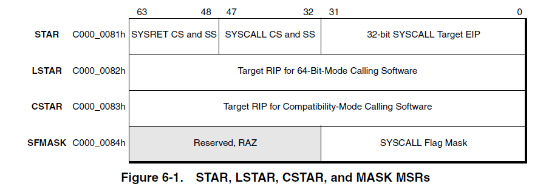
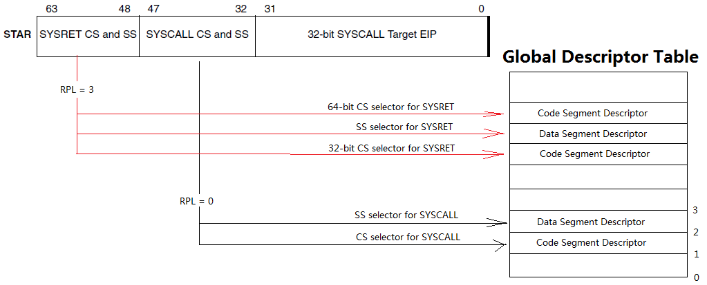

<!DOCTYPE html>


  


<html class="theme-next gemini use-motion" lang="zh-CN,en,default">
<head><meta name="generator" content="Hexo 3.8.0">
  <meta charset="UTF-8">
<meta http-equiv="X-UA-Compatible" content="IE=edge">
<meta name="viewport" content="width=device-width, initial-scale=1, maximum-scale=2">
<meta name="theme-color" content="#222">


  
  
  <link rel="stylesheet" href="/Blog/lib/needsharebutton/needsharebutton.css">


  
  
  <link rel="stylesheet" href="/Blog/lib/Han/dist/han.min.css?v=3.3">


  <meta http-equiv="Cache-Control" content="no-transform">
  <meta http-equiv="Cache-Control" content="no-siteapp">


  
  
  <link rel="stylesheet" href="/Blog/lib/fancybox/source/jquery.fancybox.css">


<link rel="stylesheet" href="/Blog/lib/font-awesome/css/font-awesome.min.css?v=4.6.2">

<link rel="stylesheet" href="/Blog/css/main.css?v=7.1.1">


  <link rel="apple-touch-icon" sizes="180x180" href="/Blog/uploads/apple-touch-icon.png?v=7.1.1">


  <link rel="icon" type="image/png" sizes="32x32" href="/Blog/uploads/favicon-32x32.png?v=7.1.1">


  <link rel="icon" type="image/png" sizes="16x16" href="/Blog/uploads/favicon-16x16.png?v=7.1.1">


  <link rel="mask-icon" href="/Blog/uploads/safari_pinned_tab.svg?v=7.1.1" color="#222">


  <meta name="msapplication-config" content="/Blog/uploads/browserconfig.xml">


<script id="hexo.configurations">
  var NexT = window.NexT || {};
  var CONFIG = {
    root: '/Blog/',
    scheme: 'Gemini',
    version: '7.1.1',
    sidebar: {"position":"left","display":"post","offset":12,"onmobile":false,"dimmer":false},
    back2top: true,
    back2top_sidebar: true,
    fancybox: true,
    fastclick: false,
    lazyload: false,
    tabs: true,
    motion: {"enable":true,"async":false,"transition":{"post_block":"fadeIn","post_header":"slideDownIn","post_body":"slideDownIn","coll_header":"slideLeftIn","sidebar":"slideUpIn"}},
    algolia: {
      applicationID: 'OP1GITE8NC',
      apiKey: '3376524e189201d978e52dbb0764689f',
      indexName: 'Miro Blog',
      hits: {"per_page":10},
      labels: {"input_placeholder":"Search for Posts","hits_empty":"We didn't find any results for the search: ${query}","hits_stats":"${hits} results found in ${time} ms"}
    }
  };
</script>


  


  <meta name="description" content="CPU 既可以运行于非特权的”用户空间”, 也可以运行于特权的”系统空间”. CPU 要从系统空间转入用户空间是容易的, 因为运行于系统空间的CPU可以通过一些特权指令改变其运行状态. 但是从用户空间转入系统空间就不容易了, 因为运行于用户空间的 CPU 是不能执行特权指令的. 一般而言,只有下面几种手段可以从用户空间转入系统空间:  中断 (Interrupt): 在开启了中断的情况下,只要有中">
<meta name="keywords" content="Kernel,Windows">
<meta property="og:type" content="article">
<meta property="og:title" content="Windows kernel learning: 2. System Call">
<meta property="og:url" content="https://mirokaku.github.io/Blog/2017/2-System-Call/index.html">
<meta property="og:site_name" content="Miro&#39;s Blog">
<meta property="og:description" content="CPU 既可以运行于非特权的”用户空间”, 也可以运行于特权的”系统空间”. CPU 要从系统空间转入用户空间是容易的, 因为运行于系统空间的CPU可以通过一些特权指令改变其运行状态. 但是从用户空间转入系统空间就不容易了, 因为运行于用户空间的 CPU 是不能执行特权指令的. 一般而言,只有下面几种手段可以从用户空间转入系统空间:  中断 (Interrupt): 在开启了中断的情况下,只要有中">
<meta property="og:locale" content="zh-CN">
<meta property="og:image" content="https://mirokaku.github.io/Blog/2017/2-System-Call/syscall_msr.jpg">
<meta property="og:image" content="https://mirokaku.github.io/Blog/2017/2-System-Call/syscall_star.jpg">
<meta property="og:image" content="https://mirokaku.github.io/Blog/2017/2-System-Call/serivce_dispatch.jpg">
<meta property="og:updated_time" content="2017-05-18T06:29:01.000Z">
<meta name="twitter:card" content="summary">
<meta name="twitter:title" content="Windows kernel learning: 2. System Call">
<meta name="twitter:description" content="CPU 既可以运行于非特权的”用户空间”, 也可以运行于特权的”系统空间”. CPU 要从系统空间转入用户空间是容易的, 因为运行于系统空间的CPU可以通过一些特权指令改变其运行状态. 但是从用户空间转入系统空间就不容易了, 因为运行于用户空间的 CPU 是不能执行特权指令的. 一般而言,只有下面几种手段可以从用户空间转入系统空间:  中断 (Interrupt): 在开启了中断的情况下,只要有中">
<meta name="twitter:image" content="https://mirokaku.github.io/Blog/2017/2-System-Call/syscall_msr.jpg">


  <link rel="alternate" href="/Blog/atom.xml" title="Miro's Blog" type="application/atom+xml">


  
  
  <link rel="canonical" href="https://mirokaku.github.io/Blog/2017/2-System-Call/">


<script id="page.configurations">
  CONFIG.page = {
    sidebar: "",
  };
</script>

  <title>Windows kernel learning: 2. System Call | Miro's Blog</title>
  


  <script async src="//www.googletagmanager.com/gtag/js?id=UA-140330910-1"></script>
  <script>
    var host = window.location.hostname;
    if (host !== "localhost" || !true) {
      window.dataLayer = window.dataLayer || [];
      function gtag(){dataLayer.push(arguments);}
      gtag('js', new Date());
      gtag('config', 'UA-140330910-1');
    }
  </script>


  <noscript>
  <style>
  .use-motion .motion-element,
  .use-motion .brand,
  .use-motion .menu-item,
  .sidebar-inner,
  .use-motion .post-block,
  .use-motion .pagination,
  .use-motion .comments,
  .use-motion .post-header,
  .use-motion .post-body,
  .use-motion .collection-title { opacity: initial; }

  .use-motion .logo,
  .use-motion .site-title,
  .use-motion .site-subtitle {
    opacity: initial;
    top: initial;
  }

  .use-motion .logo-line-before i { left: initial; }
  .use-motion .logo-line-after i { right: initial; }
  </style>
</noscript>

</head>

<body itemscope itemtype="http://schema.org/WebPage" lang="zh-CN">

  
  
    
  

  <div class="container sidebar-position-left page-post-detail">
    <div class="headband"></div>

    <header id="header" class="header" itemscope itemtype="http://schema.org/WPHeader">
      <div class="header-inner"><div class="site-brand-wrapper">
  <div class="site-meta">
    

    <div class="custom-logo-site-title">
      <a href="/Blog/" class="brand" rel="start">
        <span class="logo-line-before"><i></i></span>
        <span class="site-title">Miro's Blog</span>
        <span class="logo-line-after"><i></i></span>
      </a>
    </div>
    
      
        <p class="site-subtitle">「碎碎念」</p>
      
    
    
  </div>

  <div class="site-nav-toggle">
    <button aria-label="切换导航栏">
      <span class="btn-bar"></span>
      <span class="btn-bar"></span>
      <span class="btn-bar"></span>
    </button>
  </div>
</div>


<nav class="site-nav">
  
    <ul id="menu" class="menu">
      
        
        
        
          
          <li class="menu-item menu-item-home">

    
    
    
      
    

    

    <a href="/Blog/" rel="section"><i class="menu-item-icon fa fa-fw fa-home"></i> <br>首页</a>

  </li>
        
        
        
          
          <li class="menu-item menu-item-about">

    
    
    
      
    

    

    <span class="exturl" data-url="aHR0cHM6Ly9hYm91dC5tZS9taXJva2FrdQ=="><i class="menu-item-icon fa fa-fw fa-question-circle"></i> <br>关于</span>

  </li>
        
        
        
          
          <li class="menu-item menu-item-tags">

    
    
    
      
    

    

    <a href="/Blog/tags/" rel="section"><i class="menu-item-icon fa fa-fw fa-tags"></i> <br>标签</a>

  </li>
        
        
        
          
          <li class="menu-item menu-item-archives">

    
    
    
      
    

    

    <a href="/Blog/archives/" rel="section"><i class="menu-item-icon fa fa-fw fa-archive"></i> <br>归档</a>

  </li>

      
      
        <li class="menu-item menu-item-search">
          
            <a href="javascript:;" class="popup-trigger">
          
            
              <i class="menu-item-icon fa fa-search fa-fw"></i> <br>搜索</a>
        </li>
      
    </ul>
  

  

  
    <div class="site-search">
      
  
  <div class="algolia-popup popup search-popup">
    <div class="algolia-search">
      <div class="algolia-search-input-icon">
        <i class="fa fa-search"></i>
      </div>
      <div class="algolia-search-input" id="algolia-search-input"></div>
    </div>

    <div class="algolia-results">
      <div id="algolia-stats"></div>
      <div id="algolia-hits"></div>
      <div id="algolia-pagination" class="algolia-pagination"></div>
    </div>

    <span class="popup-btn-close">
      <i class="fa fa-times-circle"></i>
    </span>
  </div>


    </div>
  
</nav>


  


</div>
    </header>

    
  
  

  

  <span class="exturl github-corner" data-url="aHR0cHM6Ly9naXRodWIuY29tL21pcm9rYWt1" title="Follow me on GitHub" aria-label="Follow me on GitHub"><svg width="80" height="80" viewbox="0 0 250 250" aria-hidden="true"><path d="M0,0 L115,115 L130,115 L142,142 L250,250 L250,0 Z"/><path d="M128.3,109.0 C113.8,99.7 119.0,89.6 119.0,89.6 C122.0,82.7 120.5,78.6 120.5,78.6 C119.2,72.0 123.4,76.3 123.4,76.3 C127.3,80.9 125.5,87.3 125.5,87.3 C122.9,97.6 130.6,101.9 134.4,103.2" fill="currentColor" style="transform-origin: 130px 106px;" class="octo-arm"/><path d="M115.0,115.0 C114.9,115.1 118.7,116.5 119.8,115.4 L133.7,101.6 C136.9,99.2 139.9,98.4 142.2,98.6 C133.8,88.0 127.5,74.4 143.8,58.0 C148.5,53.4 154.0,51.2 159.7,51.0 C160.3,49.4 163.2,43.6 171.4,40.1 C171.4,40.1 176.1,42.5 178.8,56.2 C183.1,58.6 187.2,61.8 190.9,65.4 C194.5,69.0 197.7,73.2 200.1,77.6 C213.8,80.2 216.3,84.9 216.3,84.9 C212.7,93.1 206.9,96.0 205.4,96.6 C205.1,102.4 203.0,107.8 198.3,112.5 C181.9,128.9 168.3,122.5 157.7,114.1 C157.9,116.9 156.7,120.9 152.7,124.9 L141.0,136.5 C139.8,137.7 141.6,141.9 141.8,141.8 Z" fill="currentColor" class="octo-body"/></svg></span>


    <main id="main" class="main">
      <div class="main-inner">
        <div class="content-wrap">
          
            

          
          <div id="content" class="content">
            

  <div id="posts" class="posts-expand">
    

  

  
  
  

  
    <div class="reading-progress-bar"></div>
  

  <article class="post post-type-normal" itemscope itemtype="http://schema.org/Article">
  
  
  
  <div class="post-block">
    <link itemprop="mainEntityOfPage" href="https://mirokaku.github.io/Blog/Blog/2017/2-System-Call/">

    <span hidden itemprop="author" itemscope itemtype="http://schema.org/Person">
      <meta itemprop="name" content="Miro">
      <meta itemprop="description" content="喵喵喵?">
      <meta itemprop="image" content="/Blog/uploads/avatar.png">
    </span>

    <span hidden itemprop="publisher" itemscope itemtype="http://schema.org/Organization">
      <meta itemprop="name" content="Miro's Blog">
    </span>

    
      <header class="post-header">

        
        
          <h1 class="post-title" itemprop="name headline">Windows kernel learning: 2. System Call

              
            
          </h1>
        

        <div class="post-meta">
          <span class="post-time">

            
            
            

            
              <span class="post-meta-item-icon">
                <i class="fa fa-calendar-o"></i>
              </span>
              
                <span class="post-meta-item-text">发表于</span>
              

              
                
              

              <time title="创建时间：2017-05-12 13:41:43" itemprop="dateCreated datePublished" datetime="2017-05-12T13:41:43+08:00">2017-05-12</time>
            

            
              

              
                
                <span class="post-meta-divider">|</span>
                

                <span class="post-meta-item-icon">
                  <i class="fa fa-calendar-check-o"></i>
                </span>
                
                  <span class="post-meta-item-text">更新于</span>
                
                <time title="修改时间：2017-05-18 14:29:01" itemprop="dateModified" datetime="2017-05-18T14:29:01+08:00">2017-05-18</time>
              
            
          </span>

          
            <span class="post-category">
            
              <span class="post-meta-divider">|</span>
            
              <span class="post-meta-item-icon">
                <i class="fa fa-folder-o"></i>
              </span>
              
                <span class="post-meta-item-text">分类于</span>
              
              
                <span itemprop="about" itemscope itemtype="http://schema.org/Thing"><a href="/Blog/categories/Windows-kernel-learning/" itemprop="url" rel="index"><span itemprop="name">Windows kernel learning</span></a></span>

                
                
              
            </span>
          

          
            
            
          

          
          
            <span id="/Blog/2017/2-System-Call/" class="leancloud_visitors" data-flag-title="Windows kernel learning: 2. System Call">
              <span class="post-meta-divider">|</span>
              <span class="post-meta-item-icon">
                <i class="fa fa-eye"></i>
              </span>
              
                <span class="post-meta-item-text">阅读次数：</span>
              
                <span class="leancloud-visitors-count"></span>
            </span>
          

          

          

          

        </div>
      </header>
    

    
    
    
    <div class="post-body han-init-context" itemprop="articleBody">

      
      

      
        <p>CPU 既可以运行于非特权的”用户空间”, 也可以运行于特权的”系统空间”.</p>
<p>CPU 要从系统空间转入用户空间是容易的, 因为运行于系统空间的CPU可以通过一些特权指令改变其运行状态. 但是从用户空间转入系统空间就不容易了, 因为运行于用户空间的 CPU 是不能执行特权指令的.</p>
<p>一般而言,只有下面几种手段可以从用户空间转入系统空间:</p>
<ul>
<li><p>中断 (Interrupt): 在开启了中断的情况下,只要有中断请求到来, CPU 就会自动转入系统空间, 并指定对应的中断例程, 从而为中断请求提供服务. 中断发生在两条指令之间, 所以不会使正在执行的指令半途而废, 中断是无法预知且异步的.</p>
</li>
<li><p>异常 (Exception): 异常和中断极其相似, 只是一行发生在执行一条指令的过程中, 而不是两条指令之间. 实践中, 可以通过故意引起异常而进入内核.</p>
</li>
<li><p>自陷 (Trap): 为了让 CPU 能主动地进入系统空间, 绝大多数 CPU 都设有专门的 “自陷” 指令, 系统调用通常都是通过自陷指令实现的. 自陷指令在形式上也与中断相似,就像是 CPU 主动发出的中断请求.</p>
</li>
<li><p>快速系统调用 (fast call): 可以说是对自陷机制的改进.</p>
</li>
</ul>
<p>这篇笔记主要就是写自陷和快速系统调用机制.</p>
<a id="more"></a>


<h2 id="系统调用机制概述"><a href="#系统调用机制概述" class="headerlink" title="系统调用机制概述"></a>系统调用机制概述</h2><h3 id="自陷指令-int-2eh"><a href="#自陷指令-int-2eh" class="headerlink" title="自陷指令 int 2eh"></a>自陷指令 int 2eh</h3><p>在 Pentium Ⅱ 之前的 x86 处理器上, Windows 使用 <code>int 2eh</code> 自陷指令进入内核实现系统调用. Windows 填充 IDT 的46 号表项, 使其指向系统服务分发器. 使用 EAX 寄存器传递系统服务号, EDX 寄存器指向调用者传递给系统服务的参数列表.</p>
<h3 id="sysenter-sysexit"><a href="#sysenter-sysexit" class="headerlink" title="sysenter/sysexit"></a>sysenter/sysexit</h3><p>在之后, Windows 使用专门的 <code>sysenter</code> 指令, 这是 Intel 特别为快速系统分发而定义的指令, 与此配套, CPU 中增加了三个 MSR (Machine Specific Register) 寄存器: <code>SYSENTER_CS_MSR</code>, <code>SYSENTER_EIP_MSR</code>, <code>SYSENTER_ESP_MSR</code>. </p>
<p>这些寄存器可以通过 <code>wrmsr</code> 指令来设置, 执行 <code>wrmsr</code> 指令时, 通过寄存器 edx, eax 指定设置的值, edx 指定值的高 32 位, eax 指定值的低 32 位, 在设置上述寄存器时, edx 都是 0, 通过寄存器 ecx 指定填充的 MSR 寄存器, <code>SYSENTER_CS_MSR</code>, <code>SYSENTER_ESP_MSR</code>, <code>SYSENTER_EIP_MSR</code> 寄存器分别对应 <code>0x174, 0x175, 0x176</code>, 需要注意的是, <code>wrmsr/rdmsr</code> 指令只能在 Ring 0 执行.</p>
<p>与自陷指令一样, sysenter 使用 EAX 寄存器传递系统服务号, EDX 寄存器指向调用者传递给系统服务的参数列表.</p>
<h3 id="syscall-sysret"><a href="#syscall-sysret" class="headerlink" title="syscall/sysret"></a>syscall/sysret</h3><p>在之后的 x64 体系架构上, Windows 使用 <code>syscall</code> 指令进行系统调用,将系统调用号通过EAX寄存器来传递, 前四个参数放在寄存器中传递, 剩下的参数都被放入栈中.</p>
<p>为了支持 <code>syscall/sysret</code>, AMD 新增了4个 MSR 寄存器:</p>
<ul>
<li>STAR</li>
<li>LSTAR</li>
<li>CSTAR</li>
<li>SFMASK</li>
</ul>
<p><br></p>
<p>通过上图我们已经明白了 STAR 寄存器的用途：</p>
<p>在 <code>legacy x86</code> 下提供 <code>eip</code> 值（仅在 <code>egacy x86</code> 模式下）<br>为 <code>syscall</code> 指令提供目标代码的 <code>CS</code> 和 <code>SS</code> selector<br>为 <code>sysret</code> 指令提供返回代码的 <code>CS</code> 和 <code>SS</code> selector</p>
<p>因此, STAR 寄存器分为三部分：</p>
<ol>
<li>[31:00] - SYSCALL_EIP - legacy 模式的 EIP</li>
<li>[47:32] - SYSCALL_CS</li>
<li>[63:48] - SYSRET_CS</li>
</ol>
<ul>
<li>SYSRET_CS：32-bit code segment descriptor selector (包括 legacy x86 的 16-bit 代码)</li>
<li>SYSRET_CS+8：stack segment descriptor selector</li>
<li>SYSRET_CS+16：64-bit code segment descriptor selector</li>
</ul>
<p>SFMASK 寄存器中的值为1的位,就会在 EFLAGS 寄存器中置零.</p>
<p>在 Intel 下 STSR 被称作 <code>IA32_STAR</code>, LSTAR 被称作 <code>IA32_LSTAR</code>,  SFMASK 被称作 <code>IA32_SFMASK</code>,  虽然是冠以 IA32 体系, 但是请相信它们是 64 位的. 除前面所说的只能在 64 位环境执行, 其它方面完全是兼容 AMD 的. </p>
<p>在 Windows 中, LSTAR 实际指向 KiSystemCall64, CSTAR 指向 KiSystemCall32.</p>
<h3 id="对于-sysenter-和-syscall-的关系"><a href="#对于-sysenter-和-syscall-的关系" class="headerlink" title="对于 sysenter 和 syscall 的关系:"></a>对于 <code>sysenter</code> 和 <code>syscall</code> 的关系:</h3><blockquote>
<p>在 AMD 与 Intel 的 processor 上还是有区别的: </p>
<p>在 AMD 的 processor 上: syscall/sysret 指令在 long mode 和 protected mode ( 指的是 Legacy x86 和 compatibility mode ) 上都是有效的 ( valid ).</p>
<p>在 Intel processor 上: syscall/sysret 指令只能在 64-bit 模式上使用, compatibility 模式和 Legacy x86 模式上都是无效的. 可是 sysret 指令虽然不能在 compatibility 模式下执行, 但 sysret 却可以返回到 compaitibility 模式. 这一点只能是认为了兼容 AMD 的 sysret 指令. </p>
<p>怎么办, 这会不会出现兼容上的问题? 这里有一个折衷的处理办法: </p>
<p>在 64 位环境里统一使用 syscall/sysret 指令, 在 32 位环境里统一使用 sysenter/sysexit 指令</p>
<p>然而依旧会产生一些令人不愉快的顾虑, 没错, 在 compatibility 模式下谁都不兼容谁:</p>
<p>Intel 的 syscall/sysret 指令不能在 compatibility 模式下执行; AMD 的 sysenter/sysexit 指令也不能在 compatibility 模式下执行.</p>
<p>因此: 在 compatibility 模式下必须切换到 64 位模式, 然后使用 syscall/sysret 指令</p>
<p>详见: <span class="exturl" data-url="aHR0cDovL3d3dy5tb3VzZW9zLmNvbS9hcmNoL3N5c2NhbGxfc3lzcmV0Lmh0bWw=" title="http://www.mouseos.com/arch/syscall_sysret.html">mik-使用 syscall/sysret 指令<i class="fa fa-external-link"></i></span></p>
</blockquote>
<h2 id="系统调用机制的切换过程"><a href="#系统调用机制的切换过程" class="headerlink" title="系统调用机制的切换过程"></a>系统调用机制的切换过程</h2><h3 id="int-2eh-指令"><a href="#int-2eh-指令" class="headerlink" title="int 2eh 指令"></a><code>int 2eh</code> 指令</h3><p>CPU 的运行状态从用户态切换成内核态. 从任务状态段 TSS 中装入本线程的内核栈寄存器 SS 和 ESP, 再保存现场, 依次 PUSH SS, ESP, EFLAGS, CS, EIP, 然后执行 IDT[0x2e] 中的系统服务分发器开始执行内核中的程序. 最后系统调用返回则通过中断返回指令 <code>iret</code> 实现上述的逆过程.</p>
<h3 id="sysenter-sysexit-指令"><a href="#sysenter-sysexit-指令" class="headerlink" title="sysenter/sysexit 指令"></a><code>sysenter/sysexit</code> 指令</h3><p>在 Ring3 的代码调用了 <code>sysenter</code> 指令之后, CPU 会做出如下的操作：</p>
<ol>
<li>将 <code>SYSENTER_CS_MSR</code> 的值装载到 cs 寄存器</li>
<li>将 <code>SYSENTER_EIP_MSR</code> 的值装载到 eip 寄存器</li>
<li>将 <code>SYSENTER_CS_MSR</code> 的值加 8（Ring0 的堆栈段描述符）装载到 ss 寄存器. </li>
<li>将 <code>SYSENTER_ESP_MSR</code> 的值装载到 esp 寄存器</li>
<li>将特权级切换到 Ring0</li>
<li>如果 EFLAGS 寄存器的 VM 标志被置位, 则清除该标志</li>
<li>开始执行指定的 Ring0 代码</li>
</ol>
<p>在 Ring0 代码执行完毕, 调用 <code>SYSEXIT</code> 指令退回 Ring3 时, CPU 会做出如下操作：</p>
<ol>
<li>将 <code>SYSENTER_CS_MSR</code> 的值加 16（Ring3 的代码段描述符）装载到 cs 寄存器</li>
<li>将寄存器 edx 的值装载到 eip 寄存器</li>
<li>将 <code>SYSENTER_CS_MSR</code> 的值加 24（Ring3 的堆栈段描述符）装载到 ss 寄存器</li>
<li>将寄存器 ecx 的值装载到 esp 寄存器</li>
<li>将特权级切换到 Ring3</li>
<li>继续执行 Ring3 的代码</li>
</ol>
<h3 id="syscall-sysret-指令"><a href="#syscall-sysret-指令" class="headerlink" title="syscall/sysret 指令"></a><code>syscall/sysret</code> 指令</h3><p>用伪代码来表示</p>
<div class="highlight-wrap" autocomplete="off" autocorrect="off" autocapitalize="off" spellcheck="false" contenteditable="true" data-rel="CPP"><figure class="iseeu highlight /cpp"><table><tr><td class="gutter"><pre><span class="line">1</span><br><span class="line">2</span><br><span class="line">3</span><br><span class="line">4</span><br><span class="line">5</span><br><span class="line">6</span><br><span class="line">7</span><br><span class="line">8</span><br><span class="line">9</span><br><span class="line">10</span><br><span class="line">11</span><br><span class="line">12</span><br><span class="line">13</span><br><span class="line">14</span><br><span class="line">15</span><br><span class="line">16</span><br><span class="line">17</span><br><span class="line">18</span><br><span class="line">19</span><br><span class="line">20</span><br><span class="line">21</span><br><span class="line">22</span><br><span class="line">23</span><br><span class="line">24</span><br><span class="line">25</span><br><span class="line">26</span><br><span class="line">27</span><br><span class="line">28</span><br><span class="line">29</span><br><span class="line">30</span><br><span class="line">31</span><br><span class="line">32</span><br><span class="line">33</span><br><span class="line">34</span><br><span class="line">35</span><br><span class="line">36</span><br><span class="line">37</span><br><span class="line">38</span><br><span class="line">39</span><br><span class="line">40</span><br><span class="line">41</span><br><span class="line">42</span><br><span class="line">43</span><br><span class="line">44</span><br><span class="line">45</span><br><span class="line">46</span><br><span class="line">47</span><br><span class="line">48</span><br><span class="line">49</span><br><span class="line">50</span><br><span class="line">51</span><br><span class="line">52</span><br><span class="line">53</span><br><span class="line">54</span><br><span class="line">55</span><br><span class="line">56</span><br><span class="line">57</span><br><span class="line">58</span><br><span class="line">59</span><br><span class="line">60</span><br><span class="line">61</span><br><span class="line">62</span><br><span class="line">63</span><br><span class="line">64</span><br><span class="line">65</span><br><span class="line">66</span><br><span class="line">67</span><br><span class="line">68</span><br><span class="line">69</span><br><span class="line">70</span><br><span class="line">71</span><br><span class="line">72</span><br><span class="line">73</span><br><span class="line">74</span><br><span class="line">75</span><br><span class="line">76</span><br><span class="line">77</span><br><span class="line">78</span><br><span class="line">79</span><br><span class="line">80</span><br><span class="line">81</span><br><span class="line">82</span><br><span class="line">83</span><br><span class="line">84</span><br><span class="line">85</span><br><span class="line">86</span><br><span class="line">87</span><br><span class="line">88</span><br><span class="line">89</span><br><span class="line">90</span><br><span class="line">91</span><br><span class="line">92</span><br><span class="line">93</span><br></pre></td><td class="code"><pre><span class="line">MSR_EFER EFER;</span><br><span class="line">MSR_STAR STAR;</span><br><span class="line">MSR_LSTAR LSTAR;</span><br><span class="line">MSR_CSTAR CSTAR;</span><br><span class="line">MSR_SFMASK SFMASK;</span><br><span class="line"></span><br><span class="line"><span class="function"><span class="keyword">void</span> <span class="title">syscall</span><span class="params">()</span></span></span><br><span class="line"><span class="function"></span>&#123;</span><br><span class="line">    <span class="keyword">if</span> (EFER.SCE == <span class="number">0</span>)        <span class="comment">/* system call extensions is disable */</span></span><br><span class="line">        do_exception_UD();    <span class="comment">/* #UD exception */</span></span><br><span class="line">       </span><br><span class="line"></span><br><span class="line">    <span class="keyword">if</span> (EFER.LMA == <span class="number">1</span>) &#123;      <span class="comment">/* long mode is active */</span></span><br><span class="line">        rcx = rip;            <span class="comment">/* save rip for syscall return */</span></span><br><span class="line">        r11 = rflags;         <span class="comment">/* save rflags to r11 */</span></span><br><span class="line"></span><br><span class="line">        <span class="comment">/*</span></span><br><span class="line"><span class="comment">         * CS.L == 1 for 64-bit mode, rip from MSR_LSTAR</span></span><br><span class="line"><span class="comment">         * CS.L == 0 for compatibility, rip from MSR_CSTAR</span></span><br><span class="line"><span class="comment">         */</span></span><br><span class="line">        rip = CS.attribute.L ? LSTAR : CSTAR;</span><br><span class="line"></span><br><span class="line">        <span class="comment">/*</span></span><br><span class="line"><span class="comment">         * processor set CS register </span></span><br><span class="line"><span class="comment">         */</span>       </span><br><span class="line">        CS.selector = STAR.SYSCALL_CS;       <span class="comment">/* load selector from MSR_STAR.SYSCALL_CS */</span></span><br><span class="line">        CS.selector.RPL = <span class="number">0</span>;                 <span class="comment">/* RPL = 0 */</span></span><br><span class="line">        CS.attribute.S = <span class="number">1</span>;                  <span class="comment">/* user segment descriptor */</span></span><br><span class="line">        CS.attribute.C_D = <span class="number">1</span>;                <span class="comment">/* code segment */</span></span><br><span class="line">        CS.attribute.L = <span class="number">1</span>;                  <span class="comment">/* 64-bit */</span></span><br><span class="line">        CS.attribute.D = <span class="number">0</span>;                  <span class="comment">/* 64-bit */</span></span><br><span class="line">        CS.attribute.DPL = <span class="number">0</span>;                <span class="comment">/* CPL = 0 */</span>                   </span><br><span class="line">        CS.attribute.P = <span class="number">1</span>;                  <span class="comment">/* present = 1 */</span></span><br><span class="line">        CS.base = <span class="number">0</span>;</span><br><span class="line">        CS.limit = <span class="number">0xFFFFFFFF</span>;</span><br><span class="line"></span><br><span class="line">        <span class="comment">/*</span></span><br><span class="line"><span class="comment">         * processor set SS register</span></span><br><span class="line"><span class="comment">         */</span></span><br><span class="line">         SS.selector = STAR.SYSCALL_CS + <span class="number">8</span>;</span><br><span class="line">         SS.attribute.S = <span class="number">1</span>;</span><br><span class="line">         SS.attribute.C_D = <span class="number">0</span>;</span><br><span class="line">         SS.attribute.P = <span class="number">1</span>;</span><br><span class="line">         SS.attribute.DPL = <span class="number">0</span>;</span><br><span class="line">         SS.base = <span class="number">0</span>;</span><br><span class="line">         SS.limit = <span class="number">0xFFFFFFFF</span>;</span><br><span class="line"></span><br><span class="line">         <span class="comment">/* set rflags */</span></span><br><span class="line">         rflags = rflags &amp; ~ SFMASK;</span><br><span class="line">         rflags.RF = <span class="number">0</span>;</span><br><span class="line"></span><br><span class="line">         <span class="comment">/* goto rip ... */</span></span><br><span class="line"></span><br><span class="line"></span><br><span class="line">    &#125; <span class="keyword">else</span> &#123;</span><br><span class="line">        <span class="comment">/* legacy mode */</span></span><br><span class="line"></span><br><span class="line">        rcx = (<span class="keyword">unsigned</span> <span class="keyword">long</span> <span class="keyword">long</span>)eip;            <span class="comment">/* eip extend to 64 load into rcx */</span></span><br><span class="line">        rip = (<span class="keyword">unsigned</span> <span class="keyword">long</span> <span class="keyword">long</span>)STAR.EIP;       <span class="comment">/* get eip from MSR_STAR.EIP */</span></span><br><span class="line">       </span><br><span class="line">        CS.selector = STAR.SYSCALL_CS;</span><br><span class="line">        CS.selector.RPL = <span class="number">0</span>;</span><br><span class="line">        CS.attribute.S = <span class="number">1</span>;                  <span class="comment">/* user descriptor */</span></span><br><span class="line">        CS.attribute.C_D = <span class="number">1</span>;                <span class="comment">/* code segment */</span></span><br><span class="line">        CS.attribute.D = <span class="number">1</span>;                  <span class="comment">/* 32-bit */</span></span><br><span class="line">        CS.attribute.C = <span class="number">0</span>;                  <span class="comment">/* non-conforming */</span></span><br><span class="line">        CS.attribute.R = <span class="number">1</span>;                  <span class="comment">/* read/execute */</span></span><br><span class="line">        CS.attribute.DPL = <span class="number">0</span>;                <span class="comment">/* CPL = 0 */</span>                   </span><br><span class="line">        CS.attribute.P = <span class="number">1</span>;                  <span class="comment">/* present = 1 */</span></span><br><span class="line">        CS.attribute.G = <span class="number">1</span>;                  <span class="comment">/* G = 1 */</span></span><br><span class="line">        CS.base = <span class="number">0</span>;</span><br><span class="line">        CS.limit = <span class="number">0xFFFFFFFF</span>;                     </span><br><span class="line"></span><br><span class="line">        SS.selector = STAR.SYSCALL_CS + <span class="number">8</span>;</span><br><span class="line">        SS.attribute.S = <span class="number">1</span>;                 <span class="comment">/* user descriptor */</span></span><br><span class="line">        SS.attribute.C_D = <span class="number">0</span>;               <span class="comment">/* data segment */</span></span><br><span class="line">        SS.attribute.D = <span class="number">1</span>;                 <span class="comment">/* 32-bit esp */</span></span><br><span class="line">        SS.attribute.E = <span class="number">0</span>;                 <span class="comment">/* expand-up */</span></span><br><span class="line">        SS.attribute.W = <span class="number">1</span>;                 <span class="comment">/* read/write */</span></span><br><span class="line">        SS.attribute.P = <span class="number">1</span>;                 <span class="comment">/* present */</span></span><br><span class="line">        SS.attribute.DPL = <span class="number">0</span>;               <span class="comment">/* DPL = 0 */</span></span><br><span class="line">        SS.attribute.G = <span class="number">1</span>;                 <span class="comment">/* G = 1 */</span></span><br><span class="line">        SS.base = <span class="number">0</span>;</span><br><span class="line">        SS.limit = <span class="number">0xFFFFFFFF</span>;</span><br><span class="line"></span><br><span class="line">        rflags.VM = <span class="number">0</span>;</span><br><span class="line">        rflags.IF = <span class="number">0</span>;</span><br><span class="line">        rflags.RF = <span class="number">0</span>;</span><br><span class="line"></span><br><span class="line">        <span class="comment">/* goto rip */</span></span><br><span class="line">    &#125;</span><br><span class="line"></span><br><span class="line">&#125;</span><br></pre></td></tr></table></figure></div>

<div class="highlight-wrap" autocomplete="off" autocorrect="off" autocapitalize="off" spellcheck="false" contenteditable="true" data-rel="CPP"><figure class="iseeu highlight /cpp"><table><tr><td class="gutter"><pre><span class="line">1</span><br><span class="line">2</span><br><span class="line">3</span><br><span class="line">4</span><br><span class="line">5</span><br><span class="line">6</span><br><span class="line">7</span><br><span class="line">8</span><br><span class="line">9</span><br><span class="line">10</span><br><span class="line">11</span><br><span class="line">12</span><br><span class="line">13</span><br><span class="line">14</span><br><span class="line">15</span><br><span class="line">16</span><br><span class="line">17</span><br><span class="line">18</span><br><span class="line">19</span><br><span class="line">20</span><br><span class="line">21</span><br><span class="line">22</span><br><span class="line">23</span><br><span class="line">24</span><br><span class="line">25</span><br><span class="line">26</span><br><span class="line">27</span><br><span class="line">28</span><br><span class="line">29</span><br><span class="line">30</span><br><span class="line">31</span><br><span class="line">32</span><br><span class="line">33</span><br><span class="line">34</span><br><span class="line">35</span><br><span class="line">36</span><br><span class="line">37</span><br><span class="line">38</span><br><span class="line">39</span><br><span class="line">40</span><br><span class="line">41</span><br><span class="line">42</span><br><span class="line">43</span><br><span class="line">44</span><br><span class="line">45</span><br><span class="line">46</span><br><span class="line">47</span><br><span class="line">48</span><br><span class="line">49</span><br><span class="line">50</span><br><span class="line">51</span><br><span class="line">52</span><br><span class="line">53</span><br><span class="line">54</span><br><span class="line">55</span><br><span class="line">56</span><br><span class="line">57</span><br><span class="line">58</span><br><span class="line">59</span><br><span class="line">60</span><br><span class="line">61</span><br><span class="line">62</span><br><span class="line">63</span><br><span class="line">64</span><br><span class="line">65</span><br><span class="line">66</span><br><span class="line">67</span><br><span class="line">68</span><br><span class="line">69</span><br><span class="line">70</span><br></pre></td><td class="code"><pre><span class="line"><span class="function"><span class="keyword">void</span> <span class="title">sysret</span><span class="params">()</span></span></span><br><span class="line"><span class="function"></span>&#123;</span><br><span class="line">    <span class="keyword">if</span> (EFER.SCE == <span class="number">0</span>)                          <span class="comment">/* System Call Extension is disable */</span></span><br><span class="line">        do_exception_UD();</span><br><span class="line"></span><br><span class="line">    <span class="keyword">if</span> (CR0.PE == <span class="number">0</span> || CS.attribute.DPL != <span class="number">0</span>)   <span class="comment">/* protected mode is disable or CPL != 0 */</span></span><br><span class="line">        do_exception_GP();    </span><br><span class="line"></span><br><span class="line">    <span class="keyword">if</span> (CS.attribute.L == <span class="number">1</span>)                    <span class="comment">/* 64-bit mode */</span></span><br><span class="line">    &#123;   </span><br><span class="line">        <span class="keyword">if</span> (REX.W == <span class="number">1</span>)                         <span class="comment">/* 64-bit operand size */</span></span><br><span class="line">        &#123;</span><br><span class="line">             <span class="comment">/* </span></span><br><span class="line"><span class="comment">              * return to 64-bit code !</span></span><br><span class="line"><span class="comment">              */</span></span><br><span class="line">             CS.selector = STAR.SYSRET_CS + <span class="number">16</span>; <span class="comment">/* 64-bit code segment selector */</span></span><br><span class="line">             CS.selector.RPL = <span class="number">3</span>;               <span class="comment">/* CPL = 3 */</span></span><br><span class="line">             CS.attribute.L = <span class="number">1</span>;</span><br><span class="line">             CS.attribute.D = <span class="number">0</span>;</span><br><span class="line">             CS.attribute.P = <span class="number">1</span>;</span><br><span class="line">             CS.attribute.DPL = <span class="number">3</span>;</span><br><span class="line">             CS.base = <span class="number">0</span>;</span><br><span class="line">             CS.limit = <span class="number">0xFFFFFFFF</span>;</span><br><span class="line">           </span><br><span class="line">             rip = rcx;                     <span class="comment">/* restore rip for return */</span></span><br><span class="line"></span><br><span class="line">        &#125; <span class="keyword">else</span> &#123;</span><br><span class="line">             <span class="comment">/*</span></span><br><span class="line"><span class="comment">              * return to compatibility !</span></span><br><span class="line"><span class="comment">              */</span></span><br><span class="line">             CS.selector = STAR.SYSRET_CS;  <span class="comment">/* 32-bit code segment selector */</span></span><br><span class="line">             CS.selector.RPL = <span class="number">3</span>;</span><br><span class="line">             CS.attribute.L = <span class="number">0</span>;            <span class="comment">/* compatibility mode */</span></span><br><span class="line">             CS.attribute.D = <span class="number">1</span>;            <span class="comment">/* 32-bit code */</span></span><br><span class="line">             CS.attribute.P = <span class="number">1</span>;</span><br><span class="line">             CS.attribute.C = <span class="number">0</span>;</span><br><span class="line">             CS.attribute.R = <span class="number">1</span>;</span><br><span class="line">             CS.attribute.DPL = <span class="number">3</span>;</span><br><span class="line">             CS.base = <span class="number">0</span>;</span><br><span class="line">             CS.limit = <span class="number">0xFFFFFFFF</span>; </span><br><span class="line"></span><br><span class="line">             rip = (<span class="keyword">unsigned</span> <span class="keyword">long</span> <span class="keyword">long</span>)ecx;              </span><br><span class="line">        &#125;</span><br><span class="line">        </span><br><span class="line">        SS.selector = START.SYSRET_CS + <span class="number">8</span>;  <span class="comment">/* SS selector for return */</span></span><br><span class="line">        rflags = r11;                       <span class="comment">/* restore rflags */</span></span><br><span class="line"></span><br><span class="line">        <span class="comment">/* goto rip */</span></span><br><span class="line"></span><br><span class="line">    &#125; <span class="keyword">else</span> &#123;                                <span class="comment">/* compatibility or legacy mode */</span></span><br><span class="line"></span><br><span class="line">         CS.selector = STAR.SYSRET_CS;      <span class="comment">/* 32-bit code segment selector */</span></span><br><span class="line">         CS.selector.RPL = <span class="number">3</span></span><br><span class="line">         CS.attribute.L = <span class="number">0</span>;                <span class="comment">/* compatibility mode */</span></span><br><span class="line">         CS.attribute.D = <span class="number">1</span>;                <span class="comment">/* 32-bit code */</span></span><br><span class="line">         CS.attribute.P = <span class="number">1</span>;</span><br><span class="line">         CS.attribute.C = <span class="number">0</span>;</span><br><span class="line">         CS.attribute.R = <span class="number">1</span>;</span><br><span class="line">         CS.attribute.DPL = <span class="number">3</span>;</span><br><span class="line">         CS.base = <span class="number">0</span>;</span><br><span class="line">         CS.limit = <span class="number">0xFFFFFFFF</span>; </span><br><span class="line"></span><br><span class="line">         SS.selector = STAR.SYSRET_CS + <span class="number">8</span>;</span><br><span class="line"></span><br><span class="line">         rflags.IF = <span class="number">1</span>;</span><br><span class="line"></span><br><span class="line">         rip = (<span class="keyword">unsigned</span> <span class="keyword">long</span> <span class="keyword">long</span>)ecx;</span><br><span class="line">    &#125;</span><br><span class="line"></span><br><span class="line">&#125;</span><br></pre></td></tr></table></figure></div>

<h2 id="System-Service-Descriptor-Table-SSDT-amp-Shadow-SSDT"><a href="#System-Service-Descriptor-Table-SSDT-amp-Shadow-SSDT" class="headerlink" title="System Service Descriptor Table (SSDT) &amp; Shadow SSDT"></a>System Service Descriptor Table (SSDT) &amp; Shadow SSDT</h2><p>现在我们知道, Ring3 通过 <code>syscall</code> 进行系统调用到 Ring0, 那么 <code>syscall</code> 是怎么找到对应的内核服务函数的呢? 就是通过 SSDT 和 Shadow SSDT 这两张表来找到的.</p>
<p>SSDT 的全称是 System Services Descriptor Table, 系统服务描述符表. 这个表就是一个把 Ring3 的 Win32 API 和 Ring0 的内核 API 联系起来. SSDT 并不仅仅只包含一个庞大的地址索引表, 它还包含着一些其它有用的信息, 诸如地址索引的基地址, 服务函数个数等. 通过修改此表的函数地址可以对常用Windows 函数及 API 进行 Hook, 从而实现对一些关心的系统动作进行过滤, 监控的目的. 一些 HIPS, 防毒软件, 系统监控, 注册表监控软件往往会采用此接口来实现自己的监控模块. </p>
<p>例如, Windows API OpenProcess是从Kernel32导出的, 所以调用首先转到了Kernel32的OpenProcess函数. 在OpenProcess中又调用了ntdll!NtOpenProcess函数. 然后通过快速系统调用进入内核, 根据传进来的索引在SSDT中得到函数的地址, 然后调用函数. </p>
<p>在 NT 4.0 以上的 Windows 操作系统中, 默认就存在两个系统服务描述表, 这两个调度表对应了两类不同的系统服务, 这两个调度表为：KeServiceDescriptorTable 和 KeServiceDescriptorTableShadow, 其中 KeServiceDescriptorTable 主要是处理来自 Ring3 层得 Kernel32.dll中的系统调用, 而 KeServiceDescriptorTableShadow 则主要处理来自 User32.dll 和 GDI32.dll 以及 Win32u.dll 中的系统调用, 并且 KeServiceDescriptorTable 在ntoskrnl.exe(Windows 操作系统内核文件, 包括内核和执行体层)是导出的, 而 KeServiceDescriptorTableShadow 则是没有被 Windows 操作系统所导出, 而关于 SSDT 的全部内容则都是通过 KeServiceDescriptorTable 来完成的 ~</p>
<p>ntoskrnl.exe中的一个导出项 KeServiceDescriptorTable 即是SSDT的真身, 亦即它在内核中的数据实体. SSDT的数 据结构定义如下: </p>
<div class="highlight-wrap" autocomplete="off" autocorrect="off" autocapitalize="off" spellcheck="false" contenteditable="true" data-rel="C"><figure class="iseeu highlight /c"><table><tr><td class="gutter"><pre><span class="line">1</span><br><span class="line">2</span><br><span class="line">3</span><br><span class="line">4</span><br><span class="line">5</span><br><span class="line">6</span><br><span class="line">7</span><br><span class="line">8</span><br><span class="line">9</span><br><span class="line">10</span><br><span class="line">11</span><br><span class="line">12</span><br><span class="line">13</span><br><span class="line">14</span><br><span class="line">15</span><br></pre></td><td class="code"><pre><span class="line"><span class="keyword">typedef</span> <span class="class"><span class="keyword">struct</span> _<span class="title">KSYSTEM_SERVICE_TABLE</span></span></span><br><span class="line"><span class="class">&#123;</span></span><br><span class="line">    PULONG  ServiceTableBase;                               <span class="comment">// SSDT (System Service Dispatch Table)的基地址</span></span><br><span class="line">    PULONG  ServiceCounterTableBase;                        <span class="comment">// 用于 checked builds, 包含 SSDT 中每个服务被调用的次数</span></span><br><span class="line">    ULONG   NumberOfService;                                <span class="comment">// 服务函数的个数, NumberOfService * 4 就是整个地址表的大小</span></span><br><span class="line">    ULONG   ParamTableBase;                                 <span class="comment">// SSPT(System Service Parameter Table)的基地址, 该表格包含了每个服务所需的参数字节数</span></span><br><span class="line">&#125; KSYSTEM_SERVICE_TABLE, *PKSYSTEM_SERVICE_TABLE;</span><br><span class="line"></span><br><span class="line"><span class="keyword">typedef</span> <span class="class"><span class="keyword">struct</span> _<span class="title">KSERVICE_TABLE_DESCRIPTOR</span></span></span><br><span class="line"><span class="class">&#123;</span></span><br><span class="line">    KSYSTEM_SERVICE_TABLE   ntoskrnl;                       <span class="comment">// ntoskrnl.exe 的服务函数</span></span><br><span class="line">    KSYSTEM_SERVICE_TABLE   win32k;                         <span class="comment">// win32k.sys 的服务函数(GDI32.dll/User32.dll 的内核支持)</span></span><br><span class="line">    KSYSTEM_SERVICE_TABLE   notUsed1;</span><br><span class="line">    KSYSTEM_SERVICE_TABLE   notUsed2;</span><br><span class="line">&#125;KSERVICE_TABLE_DESCRIPTOR, *PKSERVICE_TABLE_DESCRIPTOR;</span><br></pre></td></tr></table></figure></div>

<p>然而, x86 与 x64 有些许差别, x86 中 ServiceTableBase 存储的就是系统服务函数地址.<br>而 x64 中 ServiceTableBase 存储的是相对于ServiceTableBase的系统服务函数的偏移, 同样使用4字节表示一项.<br>由于函数的起始地址最低四位都是0, 所以微软将 SSDT 中的低四位用来记录这个函数有多少个参数需要在<strong>栈</strong>中传递, 即 <code>ArgumentCount - 4</code> (RCX, RDX, R8, R9).</p>
<p>那么根据 KiSystemServiceStart 函数可得到算法:</p>
<div class="highlight-wrap" autocomplete="off" autocorrect="off" autocapitalize="off" spellcheck="false" contenteditable="true" data-rel="C"><figure class="iseeu highlight /c"><table><tr><td class="gutter"><pre><span class="line">1</span><br><span class="line">2</span><br><span class="line">3</span><br></pre></td><td class="code"><pre><span class="line">x86: Address = ServiceTableBase + (SystemCallNumber * <span class="number">4</span>)</span><br><span class="line"></span><br><span class="line">x64: Address = ServiceTableBase + (((<span class="keyword">int</span>*)(ServiceTableBase + (SystemCallNumber &amp; <span class="number">0x0FFF</span>) * <span class="number">4</span>))[<span class="number">0</span>] &gt;&gt; <span class="number">4</span>)</span><br></pre></td></tr></table></figure></div>

<h2 id="拿个栗子说事儿"><a href="#拿个栗子说事儿" class="headerlink" title="拿个栗子说事儿"></a>拿个栗子说事儿</h2><h3 id="Windows-8-1-x64-syscall-sysret"><a href="#Windows-8-1-x64-syscall-sysret" class="headerlink" title="Windows 8.1 x64, syscall/sysret"></a>Windows 8.1 x64, syscall/sysret</h3><p>首先我们来看下 <code>syscall/sysret</code> 相关的几个寄存器</p>
<div class="highlight-wrap" autocomplete="off" autocorrect="off" autocapitalize="off" spellcheck="false" contenteditable="true" data-rel="PLAIN"><figure class="iseeu highlight /plain"><table><tr><td class="gutter"><pre><span class="line">1</span><br><span class="line">2</span><br><span class="line">3</span><br><span class="line">4</span><br><span class="line">5</span><br><span class="line">6</span><br><span class="line">7</span><br><span class="line">8</span><br><span class="line">9</span><br><span class="line">10</span><br><span class="line">11</span><br><span class="line">12</span><br><span class="line">13</span><br><span class="line">14</span><br><span class="line">15</span><br><span class="line">16</span><br><span class="line">17</span><br><span class="line">18</span><br><span class="line">19</span><br><span class="line">20</span><br><span class="line">21</span><br><span class="line">22</span><br></pre></td><td class="code"><pre><span class="line">1: kd&gt; rdmsr c0000081</span><br><span class="line">msr[c0000081] = 00230010`00000000</span><br><span class="line">1: kd&gt; rdmsr c0000082</span><br><span class="line">msr[c0000082] = fffff800`2a492200</span><br><span class="line">1: kd&gt; ln fffff800`2a492200</span><br><span class="line">Browse module</span><br><span class="line">Set bu breakpoint</span><br><span class="line"></span><br><span class="line">(fffff800`2a492200)   nt!KiSystemCall64   |  (fffff800`2a492348)   nt!KiSystemServiceStart</span><br><span class="line">Exact matches:</span><br><span class="line">    nt!KiSystemCall64 (&lt;no parameter info&gt;)</span><br><span class="line">1: kd&gt; rdmsr c0000083</span><br><span class="line">msr[c0000083] = fffff800`2a491f40</span><br><span class="line">1: kd&gt; ln fffff800`2a491f40</span><br><span class="line">Browse module</span><br><span class="line">Set bu breakpoint</span><br><span class="line"></span><br><span class="line">(fffff800`2a491f40)   nt!KiSystemCall32   |  (fffff800`2a492080)   nt!KiSystemServiceHandler</span><br><span class="line">Exact matches:</span><br><span class="line">    nt!KiSystemCall32 (&lt;no parameter info&gt;)</span><br><span class="line">1: kd&gt; rdmsr c0000084</span><br><span class="line">msr[c0000084] = 00000000`00004700</span><br></pre></td></tr></table></figure></div>

<p>首先看一下 STAR 寄存器. 通过 <code>rdmsr c0000081</code> 得到 <code>0023001000000000</code>, 根据 STAR 的结构得知:</p>
<ul>
<li>sysret  CS        : 0023</li>
<li>sysret  SS        : 002B ; CS + 8</li>
<li>sysret  CS 64bit  : 0033 ; CS + 16</li>
<li>syscall CS        : 0010 </li>
<li>syscall SS        : 0018 ; CS + 8</li>
<li>syscall 32bit EIP : 00000000</li>
</ul>
<p>我们通过分别对 ntdll!NtCreateFile 和 nt!NtCreateFile 下断点来验证一下:</p>
<figure class="highlight x86asm"><table><tr><td class="gutter"><pre><span class="line">1</span><br><span class="line">2</span><br><span class="line">3</span><br><span class="line">4</span><br><span class="line">5</span><br><span class="line">6</span><br><span class="line">7</span><br><span class="line">8</span><br><span class="line">9</span><br><span class="line">10</span><br><span class="line">11</span><br><span class="line">12</span><br><span class="line">13</span><br><span class="line">14</span><br><span class="line">15</span><br><span class="line">16</span><br><span class="line">17</span><br><span class="line">18</span><br><span class="line">19</span><br><span class="line">20</span><br><span class="line">21</span><br><span class="line">22</span><br><span class="line">23</span><br><span class="line">24</span><br><span class="line">25</span><br><span class="line">26</span><br><span class="line">27</span><br><span class="line">28</span><br><span class="line">29</span><br></pre></td><td class="code"><pre><span class="line">Breakpoint <span class="number">1</span> hit</span><br><span class="line">ntdll!NtCreateFile:</span><br><span class="line"><span class="number">0033</span>:00007ff8<span class="string">`8d282670 48894c2408      mov     qword ptr [rsp+8],rcx</span></span><br><span class="line"><span class="string">1: kd&gt; r</span></span><br><span class="line"><span class="string">rax=0000000000000000 rbx=000000000eb94a60 rcx=000000001128eb80</span></span><br><span class="line"><span class="string">rdx=0000000000100001 rsi=00000000133ea660 rdi=00007ff875680088</span></span><br><span class="line"><span class="string">rip=00007ff88d282670 rsp=000000001128eb08 rbp=000000001128eba9</span></span><br><span class="line"><span class="string"> r8=000000001128eba8  r9=000000001128ebe0 r10=00000000133e6050</span></span><br><span class="line"><span class="string">r11=00000000133ea668 r12=0000000000000001 r13=00007ff875680088</span></span><br><span class="line"><span class="string">r14=0000000000000000 r15=000000000eb58e90</span></span><br><span class="line"><span class="string">iopl=0         nv up ei pl zr na po nc</span></span><br><span class="line"><span class="string">cs=0033  ss=002b  ds=002b  es=002b  fs=0053  gs=002b             efl=00000246</span></span><br><span class="line"><span class="string">ntdll!NtCreateFile:</span></span><br><span class="line"><span class="string">0033:00007ff8`</span>8d282670 48894c2408      <span class="keyword">mov</span>     <span class="built_in">qword</span> <span class="built_in">ptr</span> [<span class="built_in">rsp</span>+<span class="number">8</span>],<span class="built_in">rcx</span> <span class="built_in">ss</span>:002b:<span class="number">00000000</span><span class="string">`1128eb10=000000000eb94a60</span></span><br><span class="line"><span class="string">1: kd&gt; g</span></span><br><span class="line"><span class="string">Breakpoint 2 hit</span></span><br><span class="line"><span class="string">nt!NtCreateFile:</span></span><br><span class="line"><span class="string">fffff802`</span>2b5f8784 488bc4          <span class="keyword">mov</span>     <span class="built_in">rax</span>,<span class="built_in">rsp</span></span><br><span class="line"><span class="number">1</span>: kd&gt; r</span><br><span class="line"><span class="built_in">rax</span>=<span class="number">0000000000000000</span> <span class="built_in">rbx</span>=ffffe0000883e080 <span class="built_in">rcx</span>=000000001128eb80</span><br><span class="line"><span class="built_in">rdx</span>=<span class="number">0000000000100001</span> <span class="built_in">rsi</span>=000000001128eb28 <span class="built_in">rdi</span>=ffffd00026fb2aa8</span><br><span class="line"><span class="built_in">rip</span>=fffff8022b5f8784 <span class="built_in">rsp</span>=ffffd00026fb2a88 <span class="built_in">rbp</span>=ffffd00026fb2b80</span><br><span class="line"> <span class="built_in">r8</span>=000000001128eba8  <span class="built_in">r9</span>=000000001128ebe0 <span class="built_in">r10</span>=fffff8022b5f8784</span><br><span class="line"><span class="built_in">r11</span>=fffff8022af1a478 <span class="built_in">r12</span>=<span class="number">0000000000000001</span> <span class="built_in">r13</span>=00007ff875680088</span><br><span class="line"><span class="built_in">r14</span>=<span class="number">0000000000000000</span> <span class="built_in">r15</span>=000000000eb58e90</span><br><span class="line">iopl=<span class="number">0</span>         nv <span class="meta">up</span> ei pl zr na po nc</span><br><span class="line"><span class="built_in">cs</span>=<span class="number">0010</span>  <span class="built_in">ss</span>=<span class="number">0018</span>  <span class="built_in">ds</span>=002b  <span class="built_in">es</span>=002b  <span class="built_in">fs</span>=<span class="number">0053</span>  <span class="built_in">gs</span>=002b             efl=<span class="number">00000246</span></span><br><span class="line">nt!NtCreateFile:</span><br><span class="line">fffff802<span class="string">`2b5f8784 488bc4          mov     rax,rsp</span></span><br></pre></td></tr></table></figure>

<p>可以看到<br>ntdll!NtCreateFile 的 CS, SS 寄存器的值分别对应 sysret 的 CS 64it, SS.<br>nt!NtCreateFile 的 CS, SS 寄存器的值分别对应 syscall 的 CS, SS.</p>
<p>接下来, 我们来看看 syscall 是如何从 Ring3 切换到 Ring0 的.<br>我们来看下 LSTAR 指向的函数, 即 nt!KiSystemCall64 :</p>
<p>不知道什么原因, 我只要对这个函数下断点就会导致 VMWare 虚拟机显示CPU异常而退出…<br>所以我们直接用 IDA 看代码</p>
<h4 id="KiSystemCall64"><a href="#KiSystemCall64" class="headerlink" title="KiSystemCall64"></a>KiSystemCall64</h4><figure class="highlight x86asm"><table><tr><td class="gutter"><pre><span class="line">1</span><br><span class="line">2</span><br><span class="line">3</span><br><span class="line">4</span><br><span class="line">5</span><br><span class="line">6</span><br><span class="line">7</span><br><span class="line">8</span><br><span class="line">9</span><br><span class="line">10</span><br><span class="line">11</span><br><span class="line">12</span><br><span class="line">13</span><br><span class="line">14</span><br><span class="line">15</span><br><span class="line">16</span><br><span class="line">17</span><br><span class="line">18</span><br><span class="line">19</span><br><span class="line">20</span><br><span class="line">21</span><br><span class="line">22</span><br><span class="line">23</span><br><span class="line">24</span><br><span class="line">25</span><br><span class="line">26</span><br><span class="line">27</span><br><span class="line">28</span><br><span class="line">29</span><br><span class="line">30</span><br><span class="line">31</span><br><span class="line">32</span><br><span class="line">33</span><br><span class="line">34</span><br><span class="line">35</span><br><span class="line">36</span><br><span class="line">37</span><br><span class="line">38</span><br><span class="line">39</span><br><span class="line">40</span><br><span class="line">41</span><br><span class="line">42</span><br><span class="line">43</span><br><span class="line">44</span><br><span class="line">45</span><br><span class="line">46</span><br><span class="line">47</span><br><span class="line">48</span><br><span class="line">49</span><br><span class="line">50</span><br><span class="line">51</span><br><span class="line">52</span><br><span class="line">53</span><br><span class="line">54</span><br><span class="line">55</span><br><span class="line">56</span><br><span class="line">57</span><br><span class="line">58</span><br><span class="line">59</span><br><span class="line">60</span><br><span class="line">61</span><br><span class="line">62</span><br><span class="line">63</span><br><span class="line">64</span><br><span class="line">65</span><br><span class="line">66</span><br><span class="line">67</span><br><span class="line">68</span><br><span class="line">69</span><br><span class="line">70</span><br><span class="line">71</span><br><span class="line">72</span><br><span class="line">73</span><br><span class="line">74</span><br><span class="line">75</span><br><span class="line">76</span><br><span class="line">77</span><br><span class="line">78</span><br><span class="line">79</span><br><span class="line">80</span><br><span class="line">81</span><br><span class="line">82</span><br><span class="line">83</span><br><span class="line">84</span><br><span class="line">85</span><br><span class="line">86</span><br><span class="line">87</span><br><span class="line">88</span><br><span class="line">89</span><br><span class="line">90</span><br><span class="line">91</span><br><span class="line">92</span><br><span class="line">93</span><br><span class="line">94</span><br><span class="line">95</span><br><span class="line">96</span><br><span class="line">97</span><br><span class="line">98</span><br><span class="line">99</span><br><span class="line">100</span><br><span class="line">101</span><br><span class="line">102</span><br><span class="line">103</span><br><span class="line">104</span><br><span class="line">105</span><br><span class="line">106</span><br><span class="line">107</span><br><span class="line">108</span><br><span class="line">109</span><br><span class="line">110</span><br><span class="line">111</span><br><span class="line">112</span><br><span class="line">113</span><br><span class="line">114</span><br><span class="line">115</span><br><span class="line">116</span><br><span class="line">117</span><br><span class="line">118</span><br><span class="line">119</span><br><span class="line">120</span><br><span class="line">121</span><br><span class="line">122</span><br><span class="line">123</span><br><span class="line">124</span><br><span class="line">125</span><br><span class="line">126</span><br><span class="line">127</span><br><span class="line">128</span><br><span class="line">129</span><br><span class="line">130</span><br><span class="line">131</span><br><span class="line">132</span><br><span class="line">133</span><br><span class="line">134</span><br><span class="line">135</span><br><span class="line">136</span><br><span class="line">137</span><br><span class="line">138</span><br><span class="line">139</span><br><span class="line">140</span><br><span class="line">141</span><br><span class="line">142</span><br><span class="line">143</span><br><span class="line">144</span><br><span class="line">145</span><br><span class="line">146</span><br><span class="line">147</span><br><span class="line">148</span><br><span class="line">149</span><br><span class="line">150</span><br><span class="line">151</span><br><span class="line">152</span><br><span class="line">153</span><br><span class="line">154</span><br><span class="line">155</span><br><span class="line">156</span><br><span class="line">157</span><br><span class="line">158</span><br><span class="line">159</span><br><span class="line">160</span><br><span class="line">161</span><br><span class="line">162</span><br><span class="line">163</span><br><span class="line">164</span><br><span class="line">165</span><br><span class="line">166</span><br><span class="line">167</span><br><span class="line">168</span><br><span class="line">169</span><br><span class="line">170</span><br><span class="line">171</span><br><span class="line">172</span><br><span class="line">173</span><br><span class="line">174</span><br><span class="line">175</span><br><span class="line">176</span><br><span class="line">177</span><br><span class="line">178</span><br><span class="line">179</span><br><span class="line">180</span><br><span class="line">181</span><br><span class="line">182</span><br><span class="line">183</span><br><span class="line">184</span><br><span class="line">185</span><br><span class="line">186</span><br><span class="line">187</span><br><span class="line">188</span><br><span class="line">189</span><br><span class="line">190</span><br><span class="line">191</span><br><span class="line">192</span><br><span class="line">193</span><br><span class="line">194</span><br><span class="line">195</span><br><span class="line">196</span><br><span class="line">197</span><br><span class="line">198</span><br><span class="line">199</span><br><span class="line">200</span><br><span class="line">201</span><br><span class="line">202</span><br><span class="line">203</span><br><span class="line">204</span><br><span class="line">205</span><br><span class="line">206</span><br><span class="line">207</span><br><span class="line">208</span><br><span class="line">209</span><br><span class="line">210</span><br><span class="line">211</span><br><span class="line">212</span><br><span class="line">213</span><br><span class="line">214</span><br><span class="line">215</span><br><span class="line">216</span><br><span class="line">217</span><br><span class="line">218</span><br><span class="line">219</span><br><span class="line">220</span><br><span class="line">221</span><br><span class="line">222</span><br><span class="line">223</span><br><span class="line">224</span><br><span class="line">225</span><br><span class="line">226</span><br><span class="line">227</span><br><span class="line">228</span><br><span class="line">229</span><br><span class="line">230</span><br><span class="line">231</span><br><span class="line">232</span><br><span class="line">233</span><br><span class="line">234</span><br><span class="line">235</span><br><span class="line">236</span><br><span class="line">237</span><br><span class="line">238</span><br><span class="line">239</span><br><span class="line">240</span><br><span class="line">241</span><br><span class="line">242</span><br><span class="line">243</span><br><span class="line">244</span><br><span class="line">245</span><br><span class="line">246</span><br><span class="line">247</span><br><span class="line">248</span><br><span class="line">249</span><br><span class="line">250</span><br><span class="line">251</span><br><span class="line">252</span><br><span class="line">253</span><br><span class="line">254</span><br><span class="line">255</span><br><span class="line">256</span><br><span class="line">257</span><br><span class="line">258</span><br><span class="line">259</span><br><span class="line">260</span><br><span class="line">261</span><br><span class="line">262</span><br><span class="line">263</span><br><span class="line">264</span><br><span class="line">265</span><br><span class="line">266</span><br><span class="line">267</span><br><span class="line">268</span><br><span class="line">269</span><br><span class="line">270</span><br><span class="line">271</span><br><span class="line">272</span><br><span class="line">273</span><br><span class="line">274</span><br><span class="line">275</span><br><span class="line">276</span><br><span class="line">277</span><br><span class="line">278</span><br><span class="line">279</span><br><span class="line">280</span><br><span class="line">281</span><br><span class="line">282</span><br><span class="line">283</span><br><span class="line">284</span><br><span class="line">285</span><br><span class="line">286</span><br><span class="line">287</span><br><span class="line">288</span><br><span class="line">289</span><br><span class="line">290</span><br><span class="line">291</span><br><span class="line">292</span><br><span class="line">293</span><br><span class="line">294</span><br><span class="line">295</span><br><span class="line">296</span><br><span class="line">297</span><br><span class="line">298</span><br><span class="line">299</span><br><span class="line">300</span><br><span class="line">301</span><br><span class="line">302</span><br><span class="line">303</span><br><span class="line">304</span><br><span class="line">305</span><br><span class="line">306</span><br><span class="line">307</span><br><span class="line">308</span><br><span class="line">309</span><br><span class="line">310</span><br><span class="line">311</span><br><span class="line">312</span><br><span class="line">313</span><br><span class="line">314</span><br><span class="line">315</span><br><span class="line">316</span><br><span class="line">317</span><br><span class="line">318</span><br><span class="line">319</span><br><span class="line">320</span><br><span class="line">321</span><br><span class="line">322</span><br><span class="line">323</span><br><span class="line">324</span><br><span class="line">325</span><br><span class="line">326</span><br><span class="line">327</span><br><span class="line">328</span><br><span class="line">329</span><br><span class="line">330</span><br><span class="line">331</span><br><span class="line">332</span><br><span class="line">333</span><br><span class="line">334</span><br><span class="line">335</span><br><span class="line">336</span><br><span class="line">337</span><br><span class="line">338</span><br><span class="line">339</span><br><span class="line">340</span><br><span class="line">341</span><br><span class="line">342</span><br><span class="line">343</span><br><span class="line">344</span><br><span class="line">345</span><br><span class="line">346</span><br><span class="line">347</span><br><span class="line">348</span><br><span class="line">349</span><br><span class="line">350</span><br><span class="line">351</span><br><span class="line">352</span><br><span class="line">353</span><br><span class="line">354</span><br><span class="line">355</span><br><span class="line">356</span><br><span class="line">357</span><br><span class="line">358</span><br><span class="line">359</span><br><span class="line">360</span><br><span class="line">361</span><br><span class="line">362</span><br><span class="line">363</span><br><span class="line">364</span><br><span class="line">365</span><br><span class="line">366</span><br><span class="line">367</span><br><span class="line">368</span><br><span class="line">369</span><br><span class="line">370</span><br><span class="line">371</span><br><span class="line">372</span><br><span class="line">373</span><br><span class="line">374</span><br><span class="line">375</span><br><span class="line">376</span><br><span class="line">377</span><br><span class="line">378</span><br><span class="line">379</span><br><span class="line">380</span><br><span class="line">381</span><br><span class="line">382</span><br><span class="line">383</span><br><span class="line">384</span><br><span class="line">385</span><br><span class="line">386</span><br><span class="line">387</span><br><span class="line">388</span><br><span class="line">389</span><br><span class="line">390</span><br><span class="line">391</span><br><span class="line">392</span><br><span class="line">393</span><br><span class="line">394</span><br><span class="line">395</span><br></pre></td><td class="code"><pre><span class="line"><span class="symbol">.text:</span>000000000028F200     KiSystemCall64  proc <span class="built_in">near</span>               <span class="comment">; DATA XREF: .pdata:000000000088430C</span></span><br><span class="line"><span class="symbol">.text:</span>000000000028F200                                             <span class="comment">; KiInitializeBootStructures+348</span></span><br><span class="line"><span class="symbol">.text:</span>000000000028F200</span><br><span class="line"><span class="symbol">.text:</span>000000000028F200     var_1C0         = <span class="built_in">qword</span> <span class="built_in">ptr</span> -<span class="number">1C0h</span></span><br><span class="line"><span class="symbol">.text:</span>000000000028F200     var_1B8         = <span class="built_in">qword</span> <span class="built_in">ptr</span> -<span class="number">1B8h</span></span><br><span class="line"><span class="symbol">.text:</span>000000000028F200     var_1B0         = <span class="built_in">qword</span> <span class="built_in">ptr</span> -<span class="number">1B0h</span></span><br><span class="line"><span class="symbol">.text:</span>000000000028F200     var_1A8         = <span class="built_in">qword</span> <span class="built_in">ptr</span> -<span class="number">1A8h</span></span><br><span class="line"><span class="symbol">.text:</span>000000000028F200     var_1A0         = <span class="built_in">qword</span> <span class="built_in">ptr</span> -<span class="number">1A0h</span></span><br><span class="line"><span class="symbol">.text:</span>000000000028F200     var_178         = <span class="built_in">byte</span> <span class="built_in">ptr</span> -<span class="number">178h</span></span><br><span class="line"><span class="symbol">.text:</span>000000000028F200     TF_Xmm1Offset   = <span class="built_in">byte</span> <span class="built_in">ptr</span> -<span class="number">110h</span></span><br><span class="line"><span class="symbol">.text:</span>000000000028F200     arg_F8          = <span class="built_in">qword</span> <span class="built_in">ptr</span>  <span class="number">100h</span></span><br><span class="line"><span class="symbol">.text:</span>000000000028F200</span><br><span class="line"><span class="symbol">.text:</span>000000000028F200 <span class="number">000</span>                 <span class="keyword">swapgs</span>                           <span class="comment">; GS.Base 与 MSR[C0000102] (KernelGSBase) 交换, 此时指向内核 GS</span></span><br><span class="line"><span class="symbol">.text:</span>000000000028F203 <span class="number">000</span>                 <span class="keyword">mov</span>     <span class="built_in">gs</span>:<span class="number">10h</span>, <span class="built_in">rsp</span>              <span class="comment">; 保存用户态栈到 _KPCR.UserRsp</span></span><br><span class="line"><span class="symbol">.text:</span>000000000028F20C <span class="number">000</span>                 <span class="keyword">mov</span>     <span class="built_in">rsp</span>, <span class="built_in">gs</span>:<span class="number">1A8h</span>             <span class="comment">; 从 _KPCR.Prcb.RspBase 加载内核态栈</span></span><br><span class="line"><span class="symbol">.text:</span>000000000028F215 <span class="number">000</span>                 <span class="keyword">push</span>    <span class="number">2Bh</span>                      <span class="comment">; 开始构建 TrapFrame, TrapFrame.SegSs = 0x2B</span></span><br><span class="line"><span class="symbol">.text:</span>000000000028F217 <span class="number">008</span>                 <span class="keyword">push</span>    <span class="built_in">qword</span> <span class="built_in">ptr</span> <span class="built_in">gs</span>:<span class="number">10h</span>         <span class="comment">; TrapFrame.Rsp = _KPCR.UserRsp (用户态栈)</span></span><br><span class="line"><span class="symbol">.text:</span>000000000028F21F <span class="number">010</span>                 <span class="keyword">push</span>    <span class="built_in">r11</span>                      <span class="comment">; TrapFrame.EFlags = r11 (用户态 rflags)</span></span><br><span class="line"><span class="symbol">.text:</span>000000000028F221 <span class="number">018</span>                 <span class="keyword">push</span>    <span class="number">33h</span>                      <span class="comment">; TrapFrame.SegCs = 0x33</span></span><br><span class="line"><span class="symbol">.text:</span>000000000028F223 <span class="number">020</span>                 <span class="keyword">push</span>    <span class="built_in">rcx</span>                      <span class="comment">; TrapFrame.Rip = rcx (这个是用户态 syscall 下一条指令的地址)</span></span><br><span class="line"><span class="symbol">.text:</span>000000000028F224 <span class="number">028</span>                 <span class="keyword">mov</span>     <span class="built_in">rcx</span>, <span class="built_in">r10</span>                 <span class="comment">; 把 FirstArgument 赋值给 rcx</span></span><br><span class="line"><span class="symbol">.text:</span>000000000028F227 <span class="number">028</span>                 <span class="keyword">sub</span>     <span class="built_in">rsp</span>, <span class="number">8</span>                   <span class="comment">; 调整栈, 跳过 TrapFrame.ErrorCode</span></span><br><span class="line"><span class="symbol">.text:</span>000000000028F22B <span class="number">030</span>                 <span class="keyword">push</span>    <span class="built_in">rbp</span>                      <span class="comment">; TrapFrame.Rbp = rbp</span></span><br><span class="line"><span class="symbol">.text:</span>000000000028F22C <span class="number">038</span>                 <span class="keyword">sub</span>     <span class="built_in">rsp</span>, <span class="number">158h</span>                <span class="comment">; 调整 TrapFrame 起始地址, 0x158 + 0x38 = 0x190 即这个结构体从尾部开始填充数据, 然后其他未处理的部分直接调整栈来分配足够的空间.</span></span><br><span class="line"><span class="symbol">.text:</span>000000000028F233 <span class="number">190</span>                 <span class="keyword">lea</span>     <span class="built_in">rbp</span>, [<span class="built_in">rsp</span>+<span class="number">190h</span>+TF_Xmm1Offset] <span class="comment">; 不理解为啥要从这个 TrapFrame.Xmm1 字段开始</span></span><br><span class="line"><span class="symbol">.text:</span>000000000028F23B <span class="number">190</span>                 <span class="keyword">mov</span>     [<span class="built_in">rbp</span>+<span class="number">0C0h</span>], <span class="built_in">rbx</span>          <span class="comment">; TrapFrame.Rbx = rbx</span></span><br><span class="line"><span class="symbol">.text:</span>000000000028F242 <span class="number">190</span>                 <span class="keyword">mov</span>     [<span class="built_in">rbp</span>+<span class="number">0C8h</span>], <span class="built_in">rdi</span>          <span class="comment">; TrapFrame.Rdi = rdi</span></span><br><span class="line"><span class="symbol">.text:</span>000000000028F249 <span class="number">190</span>                 <span class="keyword">mov</span>     [<span class="built_in">rbp</span>+<span class="number">0D0h</span>], <span class="built_in">rsi</span>          <span class="comment">; TrapFrame.Rsi = rsi</span></span><br><span class="line"><span class="symbol">.text:</span>000000000028F250 <span class="number">190</span>                 <span class="keyword">mov</span>     <span class="built_in">byte</span> <span class="built_in">ptr</span> [<span class="built_in">rbp</span>-<span class="number">55h</span>], <span class="number">2</span>    <span class="comment">; TrapFrame.ExceptionActive = 2</span></span><br><span class="line"><span class="symbol">.text:</span>000000000028F254 <span class="number">190</span>                 <span class="keyword">mov</span>     <span class="built_in">rbx</span>, <span class="built_in">gs</span>:<span class="number">188h</span>             <span class="comment">; rbx = _KPCR.Prcb.CurrentThread (_KTHREAD)</span></span><br><span class="line"><span class="symbol">.text:</span>000000000028F25D <span class="number">190</span>                 <span class="keyword">prefetchw</span> <span class="built_in">byte</span> <span class="built_in">ptr</span> [<span class="built_in">rbx</span>+<span class="number">90h</span>]     <span class="comment">; 提示 CPU 预加载 _KPCR.Prcb.CurrentThread.TrapFrame</span></span><br><span class="line"><span class="symbol">.text:</span>000000000028F264 <span class="number">190</span>                 <span class="keyword">stmxcsr</span> <span class="built_in">dword</span> <span class="built_in">ptr</span> [<span class="built_in">rbp</span>-<span class="number">54h</span>]      <span class="comment">; TrapFrame.MxCsr = mxcsr</span></span><br><span class="line"><span class="symbol">.text:</span>000000000028F268 <span class="number">190</span>                 <span class="keyword">ldmxcsr</span> <span class="built_in">dword</span> <span class="built_in">ptr</span> <span class="built_in">gs</span>:<span class="number">180h</span>        <span class="comment">; mxcsr = _KPCR.Prcb.MxCsr</span></span><br><span class="line"><span class="symbol">.text:</span>000000000028F271 <span class="number">190</span>                 <span class="keyword">cmp</span>     <span class="built_in">byte</span> <span class="built_in">ptr</span> [<span class="built_in">rbx</span>+<span class="number">3</span>], <span class="number">0</span>      <span class="comment">; _KPCR.Prcb.CurrentThread.DispatchHeader.DebugActive</span></span><br><span class="line"><span class="symbol">.text:</span>000000000028F275 <span class="number">190</span>                 <span class="keyword">mov</span>     <span class="built_in">word</span> <span class="built_in">ptr</span> [<span class="built_in">rbp</span>+<span class="number">80h</span>], <span class="number">0</span>    <span class="comment">; TrapFrame.ErrorCode = 0</span></span><br><span class="line"><span class="symbol">.text:</span>000000000028F27E <span class="number">190</span>                 <span class="keyword">jz</span>      NoDebugActive            <span class="comment">; 一般从这里跳, 未调试</span></span><br><span class="line"><span class="symbol">.text:</span>000000000028F284 <span class="number">190</span>                 <span class="keyword">mov</span>     [<span class="built_in">rbp</span>-<span class="number">50h</span>], <span class="built_in">rax</span>           <span class="comment">; TrapFrame.Rax = rax</span></span><br><span class="line"><span class="symbol">.text:</span>000000000028F288 <span class="number">190</span>                 <span class="keyword">mov</span>     [<span class="built_in">rbp</span>-<span class="number">48h</span>], <span class="built_in">rcx</span>           <span class="comment">; TrapFrame.Rcx = rcx</span></span><br><span class="line"><span class="symbol">.text:</span>000000000028F28C <span class="number">190</span>                 <span class="keyword">mov</span>     [<span class="built_in">rbp</span>-<span class="number">40h</span>], <span class="built_in">rdx</span>           <span class="comment">; TrapFrame.Rdx = rdx</span></span><br><span class="line"><span class="symbol">.text:</span>000000000028F290 <span class="number">190</span>                 <span class="keyword">test</span>    <span class="built_in">byte</span> <span class="built_in">ptr</span> [<span class="built_in">rbx</span>+<span class="number">3</span>], <span class="number">3</span>      <span class="comment">; _KPCR.Prcb.CurrentThread.DispatchHeader.DebugActive(0x3).(ActiveDR7 &amp; Instrumented)</span></span><br><span class="line"><span class="symbol">.text:</span>000000000028F294 <span class="number">190</span>                 <span class="keyword">mov</span>     [<span class="built_in">rbp</span>-<span class="number">38h</span>], <span class="built_in">r8</span>            <span class="comment">; TrapFrame.R8 = r8</span></span><br><span class="line"><span class="symbol">.text:</span>000000000028F298 <span class="number">190</span>                 <span class="keyword">mov</span>     [<span class="built_in">rbp</span>-<span class="number">30h</span>], <span class="built_in">r9</span>            <span class="comment">; TrapFrame.R9 = r9</span></span><br><span class="line"><span class="symbol">.text:</span>000000000028F29C <span class="number">190</span>                 <span class="keyword">jz</span>      short NoSaveDebugRegisterState</span><br><span class="line"><span class="symbol">.text:</span>000000000028F29E <span class="number">190</span>                 <span class="keyword">call</span>    KiSaveDebugRegisterState</span><br><span class="line"><span class="symbol">.text:</span>000000000028F2A3</span><br><span class="line"><span class="symbol">.text:</span>000000000028F2A3     NoSaveDebugRegisterState:               <span class="comment">; CODE XREF: KiSystemCall64+9C</span></span><br><span class="line"><span class="symbol">.text:</span>000000000028F2A3 <span class="number">190</span>                 <span class="keyword">test</span>    <span class="built_in">byte</span> <span class="built_in">ptr</span> [<span class="built_in">rbx</span>+<span class="number">3</span>], <span class="number">4</span>      <span class="comment">; _KPCR.Prcb.CurrentThread.DispatchHeader.DebugActive(0x4).Minimal</span></span><br><span class="line"><span class="symbol">.text:</span>000000000028F2A7 <span class="number">190</span>                 <span class="keyword">jz</span>      short NoDebugActiveMinimal</span><br><span class="line"><span class="symbol">.text:</span>000000000028F2A9 <span class="number">190</span>                 <span class="keyword">sti</span></span><br><span class="line"><span class="symbol">.text:</span>000000000028F2AA <span class="number">190</span>                 <span class="keyword">mov</span>     <span class="built_in">ecx</span>, [<span class="built_in">rbp</span>-<span class="number">50h</span>]  <span class="comment">; _QWORD</span></span><br><span class="line"><span class="symbol">.text:</span>000000000028F2AD <span class="number">190</span>                 <span class="keyword">mov</span>     <span class="built_in">rdx</span>, <span class="built_in">rsp</span>        <span class="comment">; _QWORD</span></span><br><span class="line"><span class="symbol">.text:</span>000000000028F2B0 <span class="number">190</span>                 <span class="keyword">call</span>    <span class="built_in">cs</span>:__imp_PicoSystemCallDispatch</span><br><span class="line"><span class="symbol">.text:</span>000000000028F2B6 <span class="number">190</span>                 <span class="keyword">jmp</span>     KiSystemServiceExit</span><br><span class="line"><span class="symbol">.text:</span>000000000028F2BB     <span class="comment">; ---------------------------------------------------------------------------</span></span><br><span class="line"><span class="symbol">.text:</span>000000000028F2BB</span><br><span class="line"><span class="symbol">.text:</span>000000000028F2BB     NoDebugActiveMinimal:                   <span class="comment">; CODE XREF: KiSystemCall64+A7</span></span><br><span class="line"><span class="symbol">.text:</span>000000000028F2BB <span class="number">190</span>                 <span class="keyword">test</span>    <span class="built_in">byte</span> <span class="built_in">ptr</span> [<span class="built_in">rbx</span>+<span class="number">3</span>], <span class="number">80h</span>    <span class="comment">; _KPCR.Prcb.CurrentThread.DispatchHeader.DebugActive(0x80).UmsPrimary</span></span><br><span class="line"><span class="symbol">.text:</span>000000000028F2BF <span class="number">190</span>                 <span class="keyword">jz</span>      short NoDebugActiveUmsPrimary</span><br><span class="line"><span class="symbol">.text:</span>000000000028F2C1 <span class="number">190</span>                 <span class="keyword">mov</span>     <span class="built_in">ecx</span>, <span class="number">0C0000102h</span>          <span class="comment">; KernelGSBase</span></span><br><span class="line"><span class="symbol">.text:</span>000000000028F2C6 <span class="number">190</span>                 <span class="keyword">rdmsr</span>                            <span class="comment">; 由于开头调用了 swapgs, 所以返回的是 用户态 GS</span></span><br><span class="line"><span class="symbol">.text:</span>000000000028F2C8 <span class="number">190</span>                 <span class="keyword">shl</span>     <span class="built_in">rdx</span>, <span class="number">20h</span></span><br><span class="line"><span class="symbol">.text:</span>000000000028F2CC <span class="number">190</span>                 <span class="keyword">or</span>      <span class="built_in">rax</span>, <span class="built_in">rdx</span></span><br><span class="line"><span class="symbol">.text:</span>000000000028F2CF <span class="number">190</span>                 <span class="keyword">cmp</span>     [<span class="built_in">rbx</span>+<span class="number">0F0h</span>], <span class="built_in">rax</span></span><br><span class="line"><span class="symbol">.text:</span>000000000028F2D6 <span class="number">190</span>                 <span class="keyword">jz</span>      short NoDebugActiveUmsPrimary</span><br><span class="line"><span class="symbol">.text:</span>000000000028F2D8 <span class="number">190</span>                 <span class="keyword">cmp</span>     [<span class="built_in">rbx</span>+<span class="number">200h</span>], <span class="built_in">rax</span></span><br><span class="line"><span class="symbol">.text:</span>000000000028F2DF <span class="number">190</span>                 <span class="keyword">jz</span>      short NoDebugActiveUmsPrimary</span><br><span class="line"><span class="symbol">.text:</span>000000000028F2E1 <span class="number">190</span>                 <span class="keyword">mov</span>     <span class="built_in">rdx</span>, [<span class="built_in">rbx</span>+<span class="number">1F0h</span>]</span><br><span class="line"><span class="symbol">.text:</span>000000000028F2E8 <span class="number">190</span>                 <span class="keyword">bts</span>     <span class="built_in">dword</span> <span class="built_in">ptr</span> [<span class="built_in">rbx</span>+<span class="number">74h</span>], <span class="number">9</span></span><br><span class="line"><span class="symbol">.text:</span>000000000028F2ED <span class="number">190</span>                 <span class="keyword">dec</span>     <span class="built_in">word</span> <span class="built_in">ptr</span> [<span class="built_in">rbx</span>+<span class="number">1E6h</span>]</span><br><span class="line"><span class="symbol">.text:</span>000000000028F2F4 <span class="number">190</span>                 <span class="keyword">mov</span>     [<span class="built_in">rdx</span>+<span class="number">80h</span>], <span class="built_in">rax</span></span><br><span class="line"><span class="symbol">.text:</span>000000000028F2FB <span class="number">190</span>                 <span class="keyword">sti</span></span><br><span class="line"><span class="symbol">.text:</span>000000000028F2FC <span class="number">190</span>                 <span class="keyword">call</span>    KiUmsCallEntry</span><br><span class="line"><span class="symbol">.text:</span>000000000028F301 <span class="number">190</span>                 <span class="keyword">jmp</span>     short loc_28F30E</span><br><span class="line"><span class="symbol">.text:</span>000000000028F303     <span class="comment">; ---------------------------------------------------------------------------</span></span><br><span class="line"><span class="symbol">.text:</span>000000000028F303</span><br><span class="line"><span class="symbol">.text:</span>000000000028F303     NoDebugActiveUmsPrimary:                <span class="comment">; CODE XREF: KiSystemCall64+BF</span></span><br><span class="line"><span class="symbol">.text:</span>000000000028F303                                             <span class="comment">; KiSystemCall64+D6 ...</span></span><br><span class="line"><span class="symbol">.text:</span>000000000028F303 <span class="number">190</span>                 <span class="keyword">test</span>    <span class="built_in">byte</span> <span class="built_in">ptr</span> [<span class="built_in">rbx</span>+<span class="number">3</span>], <span class="number">40h</span></span><br><span class="line"><span class="symbol">.text:</span>000000000028F307 <span class="number">190</span>                 <span class="keyword">jz</span>      short loc_28F30E</span><br><span class="line"><span class="symbol">.text:</span>000000000028F309 <span class="number">190</span>                 <span class="keyword">bts</span>     <span class="built_in">dword</span> <span class="built_in">ptr</span> [<span class="built_in">rbx</span>+<span class="number">74h</span>], <span class="number">11h</span></span><br><span class="line"><span class="symbol">.text:</span>000000000028F30E</span><br><span class="line"><span class="symbol">.text:</span>000000000028F30E     loc_28F30E:                             <span class="comment">; CODE XREF: KiSystemCall64+101</span></span><br><span class="line"><span class="symbol">.text:</span>000000000028F30E                                             <span class="comment">; KiSystemCall64+107</span></span><br><span class="line"><span class="symbol">.text:</span>000000000028F30E <span class="number">190</span>                 <span class="keyword">mov</span>     <span class="built_in">rax</span>, [<span class="built_in">rbp</span>-<span class="number">50h</span>]</span><br><span class="line"><span class="symbol">.text:</span>000000000028F312 <span class="number">190</span>                 <span class="keyword">mov</span>     <span class="built_in">rcx</span>, [<span class="built_in">rbp</span>-<span class="number">48h</span>]</span><br><span class="line"><span class="symbol">.text:</span>000000000028F316 <span class="number">190</span>                 <span class="keyword">mov</span>     <span class="built_in">rdx</span>, [<span class="built_in">rbp</span>-<span class="number">40h</span>]</span><br><span class="line"><span class="symbol">.text:</span>000000000028F31A <span class="number">190</span>                 <span class="keyword">mov</span>     <span class="built_in">r8</span>, [<span class="built_in">rbp</span>-<span class="number">38h</span>]</span><br><span class="line"><span class="symbol">.text:</span>000000000028F31E <span class="number">190</span>                 <span class="keyword">mov</span>     <span class="built_in">r9</span>, [<span class="built_in">rbp</span>-<span class="number">30h</span>]</span><br><span class="line"><span class="symbol">.text:</span>000000000028F322                     <span class="built_in">db</span>      <span class="number">66h</span>, <span class="number">66h</span>, <span class="number">66h</span>, <span class="number">66h</span>, <span class="number">66h</span>, <span class="number">66h</span></span><br><span class="line"><span class="symbol">.text:</span>000000000028F322 <span class="number">190</span>                 <span class="keyword">nop</span>     <span class="built_in">word</span> <span class="built_in">ptr</span> [<span class="built_in">rax</span>+<span class="built_in">rax</span>+<span class="number">00000000h</span>]</span><br><span class="line"><span class="symbol">.text:</span>000000000028F330</span><br><span class="line"><span class="symbol">.text:</span>000000000028F330     NoDebugActive:                          <span class="comment">; CODE XREF: KiSystemCall64+7E</span></span><br><span class="line"><span class="symbol">.text:</span>000000000028F330 <span class="number">190</span>                 <span class="keyword">sti</span></span><br><span class="line"><span class="symbol">.text:</span>000000000028F331 <span class="number">190</span>                 <span class="keyword">mov</span>     [<span class="built_in">rbx</span>+<span class="number">88h</span>], <span class="built_in">rcx</span>           <span class="comment">; _KPCR.Prcb.CurrentThread.FirstArgument</span></span><br><span class="line"><span class="symbol">.text:</span>000000000028F338 <span class="number">190</span>                 <span class="keyword">mov</span>     [<span class="built_in">rbx</span>+<span class="number">80h</span>], <span class="built_in">eax</span>           <span class="comment">; _KPCR.Prcb.CurrentThread.SystemCallNumber</span></span><br><span class="line"><span class="symbol">.text:</span>000000000028F33E <span class="number">190</span>                 <span class="keyword">cmp</span>     <span class="built_in">byte</span> <span class="built_in">ptr</span> [<span class="built_in">rbx</span>+<span class="number">232h</span>], <span class="number">1</span>   <span class="comment">; 检查 PreviousMode 应该为 UserMode</span></span><br><span class="line"><span class="symbol">.text:</span>000000000028F345 <span class="number">190</span>                 <span class="keyword">jz</span>      short KiSystemServiceStart</span><br><span class="line"><span class="symbol">.text:</span>000000000028F347 <span class="number">190</span>                 <span class="keyword">int</span>     <span class="number">3</span>               <span class="comment">; Trap to Debugger</span></span><br><span class="line"><span class="symbol">.text:</span>000000000028F348</span><br><span class="line"><span class="symbol">.text:</span>000000000028F348     KiSystemServiceStart:                   <span class="comment">; CODE XREF: KiSystemCall64+145</span></span><br><span class="line"><span class="symbol">.text:</span>000000000028F348                                             <span class="comment">; DATA XREF: KiServiceInternal+5A ...</span></span><br><span class="line"><span class="symbol">.text:</span>000000000028F348 <span class="number">190</span>                 <span class="keyword">mov</span>     [<span class="built_in">rbx</span>+<span class="number">90h</span>], <span class="built_in">rsp</span>           <span class="comment">; _KPCR.Prcb.CurrentThread.TrapFrame = TrapFrame</span></span><br><span class="line"><span class="symbol">.text:</span>000000000028F34F <span class="number">190</span>                 <span class="keyword">mov</span>     <span class="built_in">edi</span>, <span class="built_in">eax</span>                 <span class="comment">; _KPCR.Prcb.CurrentThread.SystemCallNumber</span></span><br><span class="line"><span class="symbol">.text:</span>000000000028F351 <span class="number">190</span>                 <span class="keyword">shr</span>     <span class="built_in">edi</span>, <span class="number">7</span>                   <span class="comment">; 这三行是用来在后面检查是否为 GUI API 调用的, 如果是 GUI API, 则计算出 Shadow SSDT 的偏移号.</span></span><br><span class="line"><span class="symbol">.text:</span>000000000028F354 <span class="number">190</span>                 <span class="keyword">and</span>     <span class="built_in">edi</span>, <span class="number">20h</span>                 <span class="comment">; GUI API 调用号都是从 0x1000 开始的. 0x1000 &gt;&gt; 7 刚好是 0x20</span></span><br><span class="line"><span class="symbol">.text:</span>000000000028F357 <span class="number">190</span>                 <span class="keyword">and</span>     <span class="built_in">eax</span>, <span class="number">0FFFh</span>               <span class="comment">; 修正调用号 (消除 GUI 调用号的 0x1000 基本号)</span></span><br><span class="line"><span class="symbol">.text:</span>000000000028F35C</span><br><span class="line"><span class="symbol">.text:</span>000000000028F35C     KiSystemServiceRepeat:                  <span class="comment">; CODE XREF: KiSystemCall64+4B1</span></span><br><span class="line"><span class="symbol">.text:</span>000000000028F35C                                                      <span class="comment">; 这一段就是根据调用号计算出系统服务例程地址的算法部分了</span></span><br><span class="line"><span class="symbol">.text:</span>000000000028F35C <span class="number">190</span>                 <span class="keyword">lea</span>     <span class="built_in">r10</span>, KeServiceDescriptorTable</span><br><span class="line"><span class="symbol">.text:</span>000000000028F363 <span class="number">190</span>                 <span class="keyword">lea</span>     <span class="built_in">r11</span>, KeServiceDescriptorTableShadow</span><br><span class="line"><span class="symbol">.text:</span>000000000028F36A <span class="number">190</span>                 <span class="keyword">test</span>    <span class="built_in">dword</span> <span class="built_in">ptr</span> [<span class="built_in">rbx</span>+<span class="number">78h</span>], <span class="number">40h</span> <span class="comment">; test _KPCR.Prcb.CurrentThread.ThreadFlags.GuiThread, 1</span></span><br><span class="line"><span class="symbol">.text:</span>000000000028F371 <span class="number">190</span>                 <span class="keyword">cmovnz</span>  <span class="built_in">r10</span>, <span class="built_in">r11</span>                 <span class="comment">; if GuiThread Then r10 = KeServiceDescriptorTableShadow;</span></span><br><span class="line"><span class="symbol">.text:</span>000000000028F375 <span class="number">190</span>                 <span class="keyword">cmp</span>     <span class="built_in">eax</span>, [<span class="built_in">rdi</span>+<span class="built_in">r10</span>+<span class="number">10h</span>]       <span class="comment">; SystemCallNumber &gt; _KSERVICE_TABLE_DESCRIPTOR.NumberOfServices ?</span></span><br><span class="line"><span class="symbol">.text:</span>000000000028F375 <span class="number">190</span>                                                  <span class="comment">; 这里加 rdi 表示,如果是 GDI 调用,则直接索引到 Shadow SSDT 的字段</span></span><br><span class="line"><span class="symbol">.text:</span>000000000028F37A <span class="number">190</span>                 <span class="keyword">jnb</span>     loc_28F678</span><br><span class="line"><span class="symbol">.text:</span>000000000028F380 <span class="number">190</span>                 <span class="keyword">mov</span>     <span class="built_in">r10</span>, [<span class="built_in">rdi</span>+<span class="built_in">r10</span>]           <span class="comment">; r10 = _KSERVICE_TABLE_DESCRIPTOR.ServiceTableBase</span></span><br><span class="line"><span class="symbol">.text:</span>000000000028F384 <span class="number">190</span>                 <span class="keyword">movsxd</span>  <span class="built_in">r11</span>, <span class="built_in">dword</span> <span class="built_in">ptr</span> [<span class="built_in">r10</span>+<span class="built_in">rax</span>*<span class="number">4</span>] <span class="comment">; r11 = [ServiceTableBase + SystemCallNumber * 4]</span></span><br><span class="line"><span class="symbol">.text:</span>000000000028F388 <span class="number">190</span>                 <span class="keyword">mov</span>     <span class="built_in">rax</span>, <span class="built_in">r11</span></span><br><span class="line"><span class="symbol">.text:</span>000000000028F38B <span class="number">190</span>                 <span class="keyword">sar</span>     <span class="built_in">r11</span>, <span class="number">4</span>                   <span class="comment">; r11 &gt;&gt; 4</span></span><br><span class="line"><span class="symbol">.text:</span>000000000028F38F <span class="number">190</span>                 <span class="keyword">add</span>     <span class="built_in">r10</span>, <span class="built_in">r11</span>                 <span class="comment">; 系统服务例程地址 r10 = ServiceTableBase + r11</span></span><br><span class="line"><span class="symbol">.text:</span>000000000028F392 <span class="number">190</span>                 <span class="keyword">cmp</span>     <span class="built_in">edi</span>, <span class="number">20h</span></span><br><span class="line"><span class="symbol">.text:</span>000000000028F395 <span class="number">190</span>                 <span class="keyword">jnz</span>     short NonGDITebAccess    <span class="comment">; 检查是否为 GUI API</span></span><br><span class="line"><span class="symbol">.text:</span>000000000028F397 <span class="number">190</span>                 <span class="keyword">mov</span>     <span class="built_in">r11</span>, [<span class="built_in">rbx</span>+<span class="number">0F0h</span>]          <span class="comment">; r11 = _KPCR.Prcb.CurrentThread.Teb</span></span><br><span class="line"><span class="symbol">.text:</span>000000000028F39E</span><br><span class="line"><span class="symbol">.text:</span>000000000028F39E     KiSystemServiceGdiTebAccess:            <span class="comment">; DATA XREF: KiSystemServiceHandler+D</span></span><br><span class="line"><span class="symbol">.text:</span>000000000028F39E <span class="number">190</span>                 <span class="keyword">cmp</span>     <span class="built_in">dword</span> <span class="built_in">ptr</span> [<span class="built_in">r11</span>+<span class="number">1740h</span>], <span class="number">0</span> <span class="comment">; Teb.GdiBatchCount</span></span><br><span class="line"><span class="symbol">.text:</span>000000000028F3A6 <span class="number">190</span>                 <span class="keyword">jz</span>      short NonGDITebAccess</span><br><span class="line"><span class="symbol">.text:</span>000000000028F3A8 <span class="number">190</span>                 <span class="keyword">mov</span>     [<span class="built_in">rbp</span>-<span class="number">50h</span>], <span class="built_in">rax</span></span><br><span class="line"><span class="symbol">.text:</span>000000000028F3AC <span class="number">190</span>                 <span class="keyword">mov</span>     [<span class="built_in">rbp</span>-<span class="number">48h</span>], <span class="built_in">rcx</span></span><br><span class="line"><span class="symbol">.text:</span>000000000028F3B0 <span class="number">190</span>                 <span class="keyword">mov</span>     [<span class="built_in">rbp</span>-<span class="number">40h</span>], <span class="built_in">rdx</span></span><br><span class="line"><span class="symbol">.text:</span>000000000028F3B4 <span class="number">190</span>                 <span class="keyword">mov</span>     <span class="built_in">rbx</span>, <span class="built_in">r8</span></span><br><span class="line"><span class="symbol">.text:</span>000000000028F3B7 <span class="number">190</span>                 <span class="keyword">mov</span>     <span class="built_in">rdi</span>, <span class="built_in">r9</span></span><br><span class="line"><span class="symbol">.text:</span>000000000028F3BA <span class="number">190</span>                 <span class="keyword">mov</span>     <span class="built_in">rsi</span>, <span class="built_in">r10</span></span><br><span class="line"><span class="symbol">.text:</span>000000000028F3BD <span class="number">190</span>                 <span class="keyword">mov</span>     <span class="built_in">rcx</span>, <span class="number">7</span></span><br><span class="line"><span class="symbol">.text:</span>000000000028F3C4 <span class="number">190</span>                 <span class="keyword">xor</span>     <span class="built_in">edx</span>, <span class="built_in">edx</span></span><br><span class="line"><span class="symbol">.text:</span>000000000028F3C6 <span class="number">190</span>                 <span class="keyword">xor</span>     <span class="built_in">r8</span>, <span class="built_in">r8</span></span><br><span class="line"><span class="symbol">.text:</span>000000000028F3C9 <span class="number">190</span>                 <span class="keyword">xor</span>     <span class="built_in">r9</span>, <span class="built_in">r9</span></span><br><span class="line"><span class="symbol">.text:</span>000000000028F3CC <span class="number">190</span>                 <span class="keyword">call</span>    PsInvokeWin32Callout</span><br><span class="line"><span class="symbol">.text:</span>000000000028F3D1 <span class="number">190</span>                 <span class="keyword">mov</span>     <span class="built_in">rax</span>, [<span class="built_in">rbp</span>-<span class="number">50h</span>]</span><br><span class="line"><span class="symbol">.text:</span>000000000028F3D5 <span class="number">190</span>                 <span class="keyword">mov</span>     <span class="built_in">rcx</span>, [<span class="built_in">rbp</span>-<span class="number">48h</span>]</span><br><span class="line"><span class="symbol">.text:</span>000000000028F3D9 <span class="number">190</span>                 <span class="keyword">mov</span>     <span class="built_in">rdx</span>, [<span class="built_in">rbp</span>-<span class="number">40h</span>]</span><br><span class="line"><span class="symbol">.text:</span>000000000028F3DD <span class="number">190</span>                 <span class="keyword">mov</span>     <span class="built_in">r8</span>, <span class="built_in">rbx</span></span><br><span class="line"><span class="symbol">.text:</span>000000000028F3E0 <span class="number">190</span>                 <span class="keyword">mov</span>     <span class="built_in">r9</span>, <span class="built_in">rdi</span></span><br><span class="line"><span class="symbol">.text:</span>000000000028F3E3 <span class="number">190</span>                 <span class="keyword">mov</span>     <span class="built_in">r10</span>, <span class="built_in">rsi</span></span><br><span class="line"><span class="symbol">.text:</span>000000000028F3E6                     <span class="built_in">db</span>      <span class="number">66h</span>, <span class="number">66h</span></span><br><span class="line"><span class="symbol">.text:</span>000000000028F3E6 <span class="number">190</span>                 <span class="keyword">nop</span>     <span class="built_in">word</span> <span class="built_in">ptr</span> [<span class="built_in">rax</span>+<span class="built_in">rax</span>+<span class="number">00000000h</span>]</span><br><span class="line"><span class="symbol">.text:</span>000000000028F3F0</span><br><span class="line"><span class="symbol">.text:</span>000000000028F3F0     NonGDITebAccess:                        <span class="comment">; CODE XREF: KiSystemCall64+195</span></span><br><span class="line"><span class="symbol">.text:</span>000000000028F3F0                                             <span class="comment">; KiSystemCall64+1A6</span></span><br><span class="line"><span class="symbol">.text:</span>000000000028F3F0 <span class="number">190</span>                 <span class="keyword">and</span>     <span class="built_in">eax</span>, <span class="number">0Fh</span>                 <span class="comment">; 检查需要通过栈传递的参数有几个, ArgumentCount - 4 (RCX, RDX, R8, R9)</span></span><br><span class="line"><span class="symbol">.text:</span>000000000028F3F3 <span class="number">190</span>                 <span class="keyword">jz</span>      KiSystemServiceCopyEnd</span><br><span class="line"><span class="symbol">.text:</span>000000000028F3F9 <span class="number">190</span>                 <span class="keyword">shl</span>     <span class="built_in">eax</span>, <span class="number">3</span>                   <span class="comment">; 计算栈参数总字节数 Count * 8</span></span><br><span class="line"><span class="symbol">.text:</span>000000000028F3FC <span class="number">190</span>                 <span class="keyword">lea</span>     <span class="built_in">rsp</span>, [<span class="built_in">rsp</span>-<span class="number">70h</span>]           <span class="comment">; </span></span><br><span class="line"><span class="symbol">.text:</span>000000000028F401 <span class="number">190</span>                 <span class="keyword">lea</span>     <span class="built_in">rdi</span>, [<span class="built_in">rsp</span>+<span class="number">190h</span>+var_178]  <span class="comment">; </span></span><br><span class="line"><span class="symbol">.text:</span>000000000028F406 <span class="number">190</span>                 <span class="keyword">mov</span>     <span class="built_in">rsi</span>, [<span class="built_in">rbp</span>+<span class="number">100h</span>]          <span class="comment">; rsi = Ring3 Rsp</span></span><br><span class="line"><span class="symbol">.text:</span>000000000028F40D <span class="number">190</span>                 <span class="keyword">lea</span>     <span class="built_in">rsi</span>, [<span class="built_in">rsi</span>+<span class="number">20h</span>]           <span class="comment">; </span></span><br><span class="line"><span class="symbol">.text:</span>000000000028F411 <span class="number">190</span>                 <span class="keyword">test</span>    <span class="built_in">byte</span> <span class="built_in">ptr</span> [<span class="built_in">rbp</span>+<span class="number">0F0h</span>], <span class="number">1</span></span><br><span class="line"><span class="symbol">.text:</span>000000000028F418 <span class="number">190</span>                 <span class="keyword">jz</span>      short loc_28F430</span><br><span class="line"><span class="symbol">.text:</span>000000000028F41A <span class="number">190</span>                 <span class="keyword">cmp</span>     <span class="built_in">rsi</span>, <span class="built_in">cs</span>:MmUserProbeAddress</span><br><span class="line"><span class="symbol">.text:</span>000000000028F421 <span class="number">190</span>                 <span class="keyword">cmovnb</span>  <span class="built_in">rsi</span>, <span class="built_in">cs</span>:MmUserProbeAddress</span><br><span class="line"><span class="symbol">.text:</span>000000000028F429 <span class="number">190</span>                 <span class="keyword">nop</span>     <span class="built_in">dword</span> <span class="built_in">ptr</span> [<span class="built_in">rax</span>+<span class="number">00000000h</span>]</span><br><span class="line"><span class="symbol">.text:</span>000000000028F430</span><br><span class="line"><span class="symbol">.text:</span>000000000028F430     loc_28F430:                             <span class="comment">; CODE XREF: KiSystemCall64+218</span></span><br><span class="line"><span class="symbol">.text:</span>000000000028F430 <span class="number">190</span>                 <span class="keyword">lea</span>     <span class="built_in">r11</span>, KiSystemServiceCopyEnd</span><br><span class="line"><span class="symbol">.text:</span>000000000028F437 <span class="number">190</span>                 <span class="keyword">sub</span>     <span class="built_in">r11</span>, <span class="built_in">rax</span></span><br><span class="line"><span class="symbol">.text:</span>000000000028F43A <span class="number">190</span>                 <span class="keyword">jmp</span>     <span class="built_in">r11</span>                      <span class="comment">; r11指向的 KiSystemServiceCopyStart 会拷贝系统调用的参数到内核栈</span></span><br><span class="line"><span class="symbol">.text:</span>000000000028F43D     <span class="comment">; ---------------------------------------------------------------------------</span></span><br><span class="line"><span class="symbol">.text:</span>000000000028F43D <span class="number">190</span>                 <span class="keyword">nop</span>     <span class="built_in">dword</span> <span class="built_in">ptr</span> [<span class="built_in">rax</span>]</span><br><span class="line"><span class="symbol">.text:</span>000000000028F440</span><br><span class="line"><span class="symbol">.text:</span>000000000028F440     KiSystemServiceCopyStart:               <span class="comment">; DATA XREF: KiSystemServiceHandler+1A</span></span><br><span class="line"><span class="symbol">.text:</span>000000000028F440 <span class="number">190</span>                 <span class="keyword">mov</span>     <span class="built_in">rax</span>, [<span class="built_in">rsi</span>+<span class="number">70h</span>]</span><br><span class="line"><span class="symbol">.text:</span>000000000028F444 <span class="number">190</span>                 <span class="keyword">mov</span>     [<span class="built_in">rdi</span>+<span class="number">70h</span>], <span class="built_in">rax</span></span><br><span class="line"><span class="symbol">.text:</span>000000000028F448 <span class="number">190</span>                 <span class="keyword">mov</span>     <span class="built_in">rax</span>, [<span class="built_in">rsi</span>+<span class="number">68h</span>]</span><br><span class="line"><span class="symbol">.text:</span>000000000028F44C <span class="number">190</span>                 <span class="keyword">mov</span>     [<span class="built_in">rdi</span>+<span class="number">68h</span>], <span class="built_in">rax</span></span><br><span class="line"><span class="symbol">.text:</span>000000000028F450 <span class="number">190</span>                 <span class="keyword">mov</span>     <span class="built_in">rax</span>, [<span class="built_in">rsi</span>+<span class="number">60h</span>]</span><br><span class="line"><span class="symbol">.text:</span>000000000028F454 <span class="number">190</span>                 <span class="keyword">mov</span>     [<span class="built_in">rdi</span>+<span class="number">60h</span>], <span class="built_in">rax</span></span><br><span class="line"><span class="symbol">.text:</span>000000000028F458 <span class="number">190</span>                 <span class="keyword">mov</span>     <span class="built_in">rax</span>, [<span class="built_in">rsi</span>+<span class="number">58h</span>]</span><br><span class="line"><span class="symbol">.text:</span>000000000028F45C <span class="number">190</span>                 <span class="keyword">mov</span>     [<span class="built_in">rdi</span>+<span class="number">58h</span>], <span class="built_in">rax</span></span><br><span class="line"><span class="symbol">.text:</span>000000000028F460 <span class="number">190</span>                 <span class="keyword">mov</span>     <span class="built_in">rax</span>, [<span class="built_in">rsi</span>+<span class="number">50h</span>]</span><br><span class="line"><span class="symbol">.text:</span>000000000028F464 <span class="number">190</span>                 <span class="keyword">mov</span>     [<span class="built_in">rdi</span>+<span class="number">50h</span>], <span class="built_in">rax</span></span><br><span class="line"><span class="symbol">.text:</span>000000000028F468 <span class="number">190</span>                 <span class="keyword">mov</span>     <span class="built_in">rax</span>, [<span class="built_in">rsi</span>+<span class="number">48h</span>]</span><br><span class="line"><span class="symbol">.text:</span>000000000028F46C <span class="number">190</span>                 <span class="keyword">mov</span>     [<span class="built_in">rdi</span>+<span class="number">48h</span>], <span class="built_in">rax</span></span><br><span class="line"><span class="symbol">.text:</span>000000000028F470 <span class="number">190</span>                 <span class="keyword">mov</span>     <span class="built_in">rax</span>, [<span class="built_in">rsi</span>+<span class="number">40h</span>]</span><br><span class="line"><span class="symbol">.text:</span>000000000028F474 <span class="number">190</span>                 <span class="keyword">mov</span>     [<span class="built_in">rdi</span>+<span class="number">40h</span>], <span class="built_in">rax</span></span><br><span class="line"><span class="symbol">.text:</span>000000000028F478 <span class="number">190</span>                 <span class="keyword">mov</span>     <span class="built_in">rax</span>, [<span class="built_in">rsi</span>+<span class="number">38h</span>]</span><br><span class="line"><span class="symbol">.text:</span>000000000028F47C <span class="number">190</span>                 <span class="keyword">mov</span>     [<span class="built_in">rdi</span>+<span class="number">38h</span>], <span class="built_in">rax</span></span><br><span class="line"><span class="symbol">.text:</span>000000000028F480 <span class="number">190</span>                 <span class="keyword">mov</span>     <span class="built_in">rax</span>, [<span class="built_in">rsi</span>+<span class="number">30h</span>]</span><br><span class="line"><span class="symbol">.text:</span>000000000028F484 <span class="number">190</span>                 <span class="keyword">mov</span>     [<span class="built_in">rdi</span>+<span class="number">30h</span>], <span class="built_in">rax</span></span><br><span class="line"><span class="symbol">.text:</span>000000000028F488 <span class="number">190</span>                 <span class="keyword">mov</span>     <span class="built_in">rax</span>, [<span class="built_in">rsi</span>+<span class="number">28h</span>]</span><br><span class="line"><span class="symbol">.text:</span>000000000028F48C <span class="number">190</span>                 <span class="keyword">mov</span>     [<span class="built_in">rdi</span>+<span class="number">28h</span>], <span class="built_in">rax</span></span><br><span class="line"><span class="symbol">.text:</span>000000000028F490 <span class="number">190</span>                 <span class="keyword">mov</span>     <span class="built_in">rax</span>, [<span class="built_in">rsi</span>+<span class="number">20h</span>]</span><br><span class="line"><span class="symbol">.text:</span>000000000028F494 <span class="number">190</span>                 <span class="keyword">mov</span>     [<span class="built_in">rdi</span>+<span class="number">20h</span>], <span class="built_in">rax</span></span><br><span class="line"><span class="symbol">.text:</span>000000000028F498 <span class="number">190</span>                 <span class="keyword">mov</span>     <span class="built_in">rax</span>, [<span class="built_in">rsi</span>+<span class="number">18h</span>]</span><br><span class="line"><span class="symbol">.text:</span>000000000028F49C <span class="number">190</span>                 <span class="keyword">mov</span>     [<span class="built_in">rdi</span>+<span class="number">18h</span>], <span class="built_in">rax</span></span><br><span class="line"><span class="symbol">.text:</span>000000000028F4A0 <span class="number">190</span>                 <span class="keyword">mov</span>     <span class="built_in">rax</span>, [<span class="built_in">rsi</span>+<span class="number">10h</span>]</span><br><span class="line"><span class="symbol">.text:</span>000000000028F4A4 <span class="number">190</span>                 <span class="keyword">mov</span>     [<span class="built_in">rdi</span>+<span class="number">10h</span>], <span class="built_in">rax</span></span><br><span class="line"><span class="symbol">.text:</span>000000000028F4A8 <span class="number">190</span>                 <span class="keyword">mov</span>     <span class="built_in">rax</span>, [<span class="built_in">rsi</span>+<span class="number">8</span>]</span><br><span class="line"><span class="symbol">.text:</span>000000000028F4AC <span class="number">190</span>                 <span class="keyword">mov</span>     [<span class="built_in">rdi</span>+<span class="number">8</span>], <span class="built_in">rax</span></span><br><span class="line"><span class="symbol">.text:</span>000000000028F4B0</span><br><span class="line"><span class="symbol">.text:</span>000000000028F4B0     KiSystemServiceCopyEnd:                 <span class="comment">; CODE XREF: KiSystemCall64+1F3</span></span><br><span class="line"><span class="symbol">.text:</span>000000000028F4B0                                             <span class="comment">; DATA XREF: KiSystemServiceHandler+27 ...</span></span><br><span class="line"><span class="symbol">.text:</span>000000000028F4B0 <span class="number">190</span>                 <span class="keyword">test</span>    <span class="built_in">cs</span>:[PerfGlobalGroupMask + <span class="number">8</span>], <span class="number">40h</span>    <span class="comment">; Check PERF_SYSCALL ???</span></span><br><span class="line"><span class="symbol">.text:</span>000000000028F4BA <span class="number">190</span>                 <span class="keyword">jnz</span>     loc_28F716</span><br><span class="line"><span class="symbol">.text:</span>000000000028F4C0 <span class="number">190</span>                 <span class="keyword">call</span>    <span class="built_in">r10</span>                      <span class="comment">; 调用计算出来的系统服务例程</span></span><br><span class="line"><span class="symbol">.text:</span>000000000028F4C3</span><br><span class="line"><span class="symbol">.text:</span>000000000028F4C3     loc_28F4C3:                             <span class="comment">; CODE XREF: KiSystemCall64+56B</span></span><br><span class="line"><span class="symbol">.text:</span>000000000028F4C3 <span class="number">190</span>                 <span class="keyword">inc</span>     <span class="built_in">dword</span> <span class="built_in">ptr</span> <span class="built_in">gs</span>:<span class="number">2E38h</span>       <span class="comment">; ++_KPCR.Pcrb.KeSystemCalls</span></span><br><span class="line"><span class="symbol">.text:</span>000000000028F4CB</span><br><span class="line"><span class="symbol">.text:</span>000000000028F4CB     KiSystemServiceExit:                    <span class="comment">; CODE XREF: KiSystemCall64+B6</span></span><br><span class="line"><span class="symbol">.text:</span>000000000028F4CB                                             <span class="comment">; KiSystemCall64+4D2 ...</span></span><br><span class="line"><span class="symbol">.text:</span>000000000028F4CB                                                      <span class="comment">; 开始恢复寄存器</span></span><br><span class="line"><span class="symbol">.text:</span>000000000028F4CB <span class="number">190</span>                 <span class="keyword">mov</span>     <span class="built_in">rbx</span>, [<span class="built_in">rbp</span>+<span class="number">0C0h</span>]          <span class="comment">; rbx = TrapFrame.Rbx</span></span><br><span class="line"><span class="symbol">.text:</span>000000000028F4D2 <span class="number">190</span>                 <span class="keyword">mov</span>     <span class="built_in">rdi</span>, [<span class="built_in">rbp</span>+<span class="number">0C8h</span>]          <span class="comment">; rdi = TrapFrame.Rdi</span></span><br><span class="line"><span class="symbol">.text:</span>000000000028F4D9 <span class="number">190</span>                 <span class="keyword">mov</span>     <span class="built_in">rsi</span>, [<span class="built_in">rbp</span>+<span class="number">0D0h</span>]          <span class="comment">; rsi = TrapFrame.Rsi</span></span><br><span class="line"><span class="symbol">.text:</span>000000000028F4E0 <span class="number">190</span>                 <span class="keyword">mov</span>     <span class="built_in">r11</span>, <span class="built_in">gs</span>:<span class="number">188h</span>             <span class="comment">; r11 = _KPCR.Prcb.CurrentThread (_KTHREAD)</span></span><br><span class="line"><span class="symbol">.text:</span>000000000028F4E9 <span class="number">190</span>                 <span class="keyword">test</span>    <span class="built_in">byte</span> <span class="built_in">ptr</span> [<span class="built_in">rbp</span>+<span class="number">0F0h</span>], <span class="number">1</span>   <span class="comment">; TrapFrame.SegCs.CPL == Ring0 ?</span></span><br><span class="line"><span class="symbol">.text:</span>000000000028F4F0 <span class="number">190</span>                 <span class="keyword">jz</span>      ServiceExitRing0         <span class="comment">; CPL 为 Ring0 则跳转</span></span><br><span class="line"><span class="symbol">.text:</span>000000000028F4F6 <span class="number">190</span>                 <span class="keyword">mov</span>     <span class="built_in">rcx</span>, <span class="built_in">cr8</span>                 <span class="comment">; Task Priority Register</span></span><br><span class="line"><span class="symbol">.text:</span>000000000028F4FA <span class="number">190</span>                 <span class="keyword">or</span>      <span class="built_in">cl</span>, [<span class="built_in">r11</span>+<span class="number">242h</span>]           <span class="comment">; CurrentThread.ApcStateIndex</span></span><br><span class="line"><span class="symbol">.text:</span>000000000028F501 <span class="number">190</span>                 <span class="keyword">or</span>      <span class="built_in">ecx</span>, [<span class="built_in">r11</span>+<span class="number">1E4h</span>]          <span class="comment">; CurrentThread.KernelApcDisable</span></span><br><span class="line"><span class="symbol">.text:</span>000000000028F508 <span class="number">190</span>                 <span class="keyword">jnz</span>     loc_28F6E2</span><br><span class="line"><span class="symbol">.text:</span>000000000028F50E <span class="number">190</span>                 <span class="keyword">cli</span></span><br><span class="line"><span class="symbol">.text:</span>000000000028F50F <span class="number">190</span>                 <span class="keyword">mov</span>     <span class="built_in">rcx</span>, <span class="built_in">gs</span>:<span class="number">188h</span></span><br><span class="line"><span class="symbol">.text:</span>000000000028F518 <span class="number">190</span>                 <span class="keyword">cmp</span>     <span class="built_in">byte</span> <span class="built_in">ptr</span> [<span class="built_in">rcx</span>+<span class="number">0C2h</span>], <span class="number">0</span></span><br><span class="line"><span class="symbol">.text:</span>000000000028F51F <span class="number">190</span>                 <span class="keyword">jz</span>      short loc_28F578</span><br><span class="line"><span class="symbol">.text:</span>000000000028F521 <span class="number">190</span>                 <span class="keyword">mov</span>     [<span class="built_in">rbp</span>-<span class="number">50h</span>], <span class="built_in">rax</span></span><br><span class="line"><span class="symbol">.text:</span>000000000028F525 <span class="number">190</span>                 <span class="keyword">xor</span>     <span class="built_in">eax</span>, <span class="built_in">eax</span></span><br><span class="line"><span class="symbol">.text:</span>000000000028F527 <span class="number">190</span>                 <span class="keyword">mov</span>     [<span class="built_in">rbp</span>-<span class="number">48h</span>], <span class="built_in">rax</span></span><br><span class="line"><span class="symbol">.text:</span>000000000028F52B <span class="number">190</span>                 <span class="keyword">mov</span>     [<span class="built_in">rbp</span>-<span class="number">40h</span>], <span class="built_in">rax</span></span><br><span class="line"><span class="symbol">.text:</span>000000000028F52F <span class="number">190</span>                 <span class="keyword">mov</span>     [<span class="built_in">rbp</span>-<span class="number">38h</span>], <span class="built_in">rax</span></span><br><span class="line"><span class="symbol">.text:</span>000000000028F533 <span class="number">190</span>                 <span class="keyword">mov</span>     [<span class="built_in">rbp</span>-<span class="number">30h</span>], <span class="built_in">rax</span></span><br><span class="line"><span class="symbol">.text:</span>000000000028F537 <span class="number">190</span>                 <span class="keyword">mov</span>     [<span class="built_in">rbp</span>-<span class="number">28h</span>], <span class="built_in">rax</span></span><br><span class="line"><span class="symbol">.text:</span>000000000028F53B <span class="number">190</span>                 <span class="keyword">mov</span>     [<span class="built_in">rbp</span>-<span class="number">20h</span>], <span class="built_in">rax</span></span><br><span class="line"><span class="symbol">.text:</span>000000000028F53F <span class="number">190</span>                 <span class="keyword">pxor</span>    <span class="built_in">xmm0</span>, <span class="built_in">xmm0</span></span><br><span class="line"><span class="symbol">.text:</span>000000000028F543 <span class="number">190</span>                 <span class="keyword">movaps</span>  xmmword <span class="built_in">ptr</span> [<span class="built_in">rbp</span>-<span class="number">10h</span>], <span class="built_in">xmm0</span></span><br><span class="line"><span class="symbol">.text:</span>000000000028F547 <span class="number">190</span>                 <span class="keyword">movaps</span>  xmmword <span class="built_in">ptr</span> [<span class="built_in">rbp</span>+<span class="number">0</span>], <span class="built_in">xmm0</span></span><br><span class="line"><span class="symbol">.text:</span>000000000028F54B <span class="number">190</span>                 <span class="keyword">movaps</span>  xmmword <span class="built_in">ptr</span> [<span class="built_in">rbp</span>+<span class="number">10h</span>], <span class="built_in">xmm0</span></span><br><span class="line"><span class="symbol">.text:</span>000000000028F54F <span class="number">190</span>                 <span class="keyword">movaps</span>  xmmword <span class="built_in">ptr</span> [<span class="built_in">rbp</span>+<span class="number">20h</span>], <span class="built_in">xmm0</span></span><br><span class="line"><span class="symbol">.text:</span>000000000028F553 <span class="number">190</span>                 <span class="keyword">movaps</span>  xmmword <span class="built_in">ptr</span> [<span class="built_in">rbp</span>+<span class="number">30h</span>], <span class="built_in">xmm0</span></span><br><span class="line"><span class="symbol">.text:</span>000000000028F557 <span class="number">190</span>                 <span class="keyword">movaps</span>  xmmword <span class="built_in">ptr</span> [<span class="built_in">rbp</span>+<span class="number">40h</span>], <span class="built_in">xmm0</span></span><br><span class="line"><span class="symbol">.text:</span>000000000028F55B <span class="number">190</span>                 <span class="keyword">mov</span>     <span class="built_in">ecx</span>, <span class="number">1</span></span><br><span class="line"><span class="symbol">.text:</span>000000000028F560 <span class="number">190</span>                 <span class="keyword">mov</span>     <span class="built_in">cr8</span>, <span class="built_in">rcx</span></span><br><span class="line"><span class="symbol">.text:</span>000000000028F564 <span class="number">190</span>                 <span class="keyword">sti</span></span><br><span class="line"><span class="symbol">.text:</span>000000000028F565 <span class="number">190</span>                 <span class="keyword">call</span>    KiInitiateUserApc</span><br><span class="line"><span class="symbol">.text:</span>000000000028F56A <span class="number">190</span>                 <span class="keyword">cli</span></span><br><span class="line"><span class="symbol">.text:</span>000000000028F56B <span class="number">190</span>                 <span class="keyword">mov</span>     <span class="built_in">ecx</span>, <span class="number">0</span></span><br><span class="line"><span class="symbol">.text:</span>000000000028F570 <span class="number">190</span>                 <span class="keyword">mov</span>     <span class="built_in">cr8</span>, <span class="built_in">rcx</span></span><br><span class="line"><span class="symbol">.text:</span>000000000028F574 <span class="number">190</span>                 <span class="keyword">mov</span>     <span class="built_in">rax</span>, [<span class="built_in">rbp</span>-<span class="number">50h</span>]</span><br><span class="line"><span class="symbol">.text:</span>000000000028F578</span><br><span class="line"><span class="symbol">.text:</span>000000000028F578     loc_28F578:                             <span class="comment">; CODE XREF: KiSystemCall64+31F</span></span><br><span class="line"><span class="symbol">.text:</span>000000000028F578 <span class="number">190</span>                 <span class="keyword">mov</span>     <span class="built_in">rcx</span>, <span class="built_in">gs</span>:<span class="number">188h</span></span><br><span class="line"><span class="symbol">.text:</span>000000000028F581 <span class="number">190</span>                 <span class="keyword">test</span>    <span class="built_in">dword</span> <span class="built_in">ptr</span> [<span class="built_in">rcx</span>], <span class="number">40010000h</span></span><br><span class="line"><span class="symbol">.text:</span>000000000028F587 <span class="number">190</span>                 <span class="keyword">jz</span>      short loc_28F5B7</span><br><span class="line"><span class="symbol">.text:</span>000000000028F589 <span class="number">190</span>                 <span class="keyword">mov</span>     [<span class="built_in">rbp</span>-<span class="number">50h</span>], <span class="built_in">rax</span></span><br><span class="line"><span class="symbol">.text:</span>000000000028F58D <span class="number">190</span>                 <span class="keyword">test</span>    <span class="built_in">byte</span> <span class="built_in">ptr</span> [<span class="built_in">rcx</span>+<span class="number">2</span>], <span class="number">1</span></span><br><span class="line"><span class="symbol">.text:</span>000000000028F591 <span class="number">190</span>                 <span class="keyword">jz</span>      short loc_28F5A1</span><br><span class="line"><span class="symbol">.text:</span>000000000028F593 <span class="number">190</span>                 <span class="keyword">call</span>    KiCopyCounters</span><br><span class="line"><span class="symbol">.text:</span>000000000028F598 <span class="number">190</span>                 <span class="keyword">mov</span>     <span class="built_in">rcx</span>, <span class="built_in">gs</span>:<span class="number">188h</span></span><br><span class="line"><span class="symbol">.text:</span>000000000028F5A1</span><br><span class="line"><span class="symbol">.text:</span>000000000028F5A1     loc_28F5A1:                             <span class="comment">; CODE XREF: KiSystemCall64+391</span></span><br><span class="line"><span class="symbol">.text:</span>000000000028F5A1 <span class="number">190</span>                 <span class="keyword">test</span>    <span class="built_in">byte</span> <span class="built_in">ptr</span> [<span class="built_in">rcx</span>+<span class="number">3</span>], <span class="number">40h</span></span><br><span class="line"><span class="symbol">.text:</span>000000000028F5A5 <span class="number">190</span>                 <span class="keyword">jz</span>      short loc_28F5B3</span><br><span class="line"><span class="symbol">.text:</span>000000000028F5A7 <span class="number">190</span>                 <span class="keyword">lea</span>     <span class="built_in">rsp</span>, [<span class="built_in">rbp</span>-<span class="number">80h</span>]</span><br><span class="line"><span class="symbol">.text:</span>000000000028F5AB <span class="number">190</span>                 <span class="keyword">xor</span>     <span class="built_in">rcx</span>, <span class="built_in">rcx</span></span><br><span class="line"><span class="symbol">.text:</span>000000000028F5AE <span class="number">190</span>                 <span class="keyword">call</span>    KiUmsExit</span><br><span class="line"><span class="symbol">.text:</span>000000000028F5B3</span><br><span class="line"><span class="symbol">.text:</span>000000000028F5B3     loc_28F5B3:                             <span class="comment">; CODE XREF: KiSystemCall64+3A5</span></span><br><span class="line"><span class="symbol">.text:</span>000000000028F5B3 <span class="number">190</span>                 <span class="keyword">mov</span>     <span class="built_in">rax</span>, [<span class="built_in">rbp</span>-<span class="number">50h</span>]</span><br><span class="line"><span class="symbol">.text:</span>000000000028F5B7</span><br><span class="line"><span class="symbol">.text:</span>000000000028F5B7     loc_28F5B7:                             <span class="comment">; CODE XREF: KiSystemCall64+387</span></span><br><span class="line"><span class="symbol">.text:</span>000000000028F5B7 <span class="number">190</span>                 <span class="keyword">ldmxcsr</span> <span class="built_in">dword</span> <span class="built_in">ptr</span> [<span class="built_in">rbp</span>-<span class="number">54h</span>]</span><br><span class="line"><span class="symbol">.text:</span>000000000028F5BB <span class="number">190</span>                 <span class="keyword">xor</span>     <span class="built_in">r10</span>, <span class="built_in">r10</span></span><br><span class="line"><span class="symbol">.text:</span>000000000028F5BE <span class="number">190</span>                 <span class="keyword">cmp</span>     <span class="built_in">word</span> <span class="built_in">ptr</span> [<span class="built_in">rbp</span>+<span class="number">80h</span>], <span class="number">0</span>    <span class="comment">; TrapFrame.ErrorCode == 0 ?</span></span><br><span class="line"><span class="symbol">.text:</span>000000000028F5C6 <span class="number">190</span>                 <span class="keyword">jz</span>      short ServiceExitRing3</span><br><span class="line"><span class="symbol">.text:</span>000000000028F5C8 <span class="number">190</span>                 <span class="keyword">mov</span>     [<span class="built_in">rbp</span>-<span class="number">50h</span>], <span class="built_in">rax</span></span><br><span class="line"><span class="symbol">.text:</span>000000000028F5CC <span class="number">190</span>                 <span class="keyword">call</span>    KiRestoreDebugRegisterState</span><br><span class="line"><span class="symbol">.text:</span>000000000028F5D1 <span class="number">190</span>                 <span class="keyword">mov</span>     <span class="built_in">rax</span>, <span class="built_in">gs</span>:<span class="number">188h</span></span><br><span class="line"><span class="symbol">.text:</span>000000000028F5DA <span class="number">190</span>                 <span class="keyword">mov</span>     <span class="built_in">rax</span>, [<span class="built_in">rax</span>+<span class="number">0B8h</span>]</span><br><span class="line"><span class="symbol">.text:</span>000000000028F5E1 <span class="number">190</span>                 <span class="keyword">mov</span>     <span class="built_in">rax</span>, [<span class="built_in">rax</span>+<span class="number">2C0h</span>]</span><br><span class="line"><span class="symbol">.text:</span>000000000028F5E8 <span class="number">190</span>                 <span class="keyword">or</span>      <span class="built_in">rax</span>, <span class="built_in">rax</span></span><br><span class="line"><span class="symbol">.text:</span>000000000028F5EB <span class="number">190</span>                 <span class="keyword">jz</span>      short loc_28F605</span><br><span class="line"><span class="symbol">.text:</span>000000000028F5ED <span class="number">190</span>                 <span class="keyword">cmp</span>     <span class="built_in">word</span> <span class="built_in">ptr</span> [<span class="built_in">rbp</span>+<span class="number">0F0h</span>], <span class="number">33h</span> <span class="comment">; TrapFrame.SegCs == User CS ?</span></span><br><span class="line"><span class="symbol">.text:</span>000000000028F5F5 <span class="number">190</span>                 <span class="keyword">jnz</span>     short loc_28F605</span><br><span class="line"><span class="symbol">.text:</span>000000000028F5F7 <span class="number">190</span>                 <span class="keyword">mov</span>     <span class="built_in">r10</span>, [<span class="built_in">rbp</span>+<span class="number">0E8h</span>]          <span class="comment">; CurrentThread.Queue</span></span><br><span class="line"><span class="symbol">.text:</span>000000000028F5FE <span class="number">190</span>                 <span class="keyword">mov</span>     [<span class="built_in">rbp</span>+<span class="number">0E8h</span>], <span class="built_in">rax</span></span><br><span class="line"><span class="symbol">.text:</span>000000000028F605</span><br><span class="line"><span class="symbol">.text:</span>000000000028F605     loc_28F605:                             <span class="comment">; CODE XREF: KiSystemCall64+3EB</span></span><br><span class="line"><span class="symbol">.text:</span>000000000028F605                                             <span class="comment">; KiSystemCall64+3F5</span></span><br><span class="line"><span class="symbol">.text:</span>000000000028F605 <span class="number">190</span>                 <span class="keyword">mov</span>     <span class="built_in">rax</span>, [<span class="built_in">rbp</span>-<span class="number">50h</span>]</span><br><span class="line"><span class="symbol">.text:</span>000000000028F609</span><br><span class="line"><span class="symbol">.text:</span>000000000028F609     ServiceExitRing3:                       <span class="comment">; CODE XREF: KiSystemCall64+3C6</span></span><br><span class="line"><span class="symbol">.text:</span>000000000028F609 <span class="number">190</span>                 <span class="keyword">mov</span>     <span class="built_in">r8</span>, [<span class="built_in">rbp</span>+<span class="number">100h</span>]           <span class="comment">; r8 = TrapFram.Rsp</span></span><br><span class="line"><span class="symbol">.text:</span>000000000028F610 <span class="number">190</span>                 <span class="keyword">mov</span>     <span class="built_in">r9</span>, [<span class="built_in">rbp</span>+<span class="number">0D8h</span>]           <span class="comment">; r9 = TrapFram.Rbp</span></span><br><span class="line"><span class="symbol">.text:</span>000000000028F617 <span class="number">190</span>                 <span class="keyword">xor</span>     <span class="built_in">edx</span>, <span class="built_in">edx</span>                 <span class="comment">; 0</span></span><br><span class="line"><span class="symbol">.text:</span>000000000028F619 <span class="number">190</span>                 <span class="keyword">pxor</span>    <span class="built_in">xmm0</span>, <span class="built_in">xmm0</span>               <span class="comment">; 下面 pxor 的全是重置为 0</span></span><br><span class="line"><span class="symbol">.text:</span>000000000028F61D <span class="number">190</span>                 <span class="keyword">pxor</span>    <span class="built_in">xmm1</span>, <span class="built_in">xmm1</span></span><br><span class="line"><span class="symbol">.text:</span>000000000028F621 <span class="number">190</span>                 <span class="keyword">pxor</span>    <span class="built_in">xmm2</span>, <span class="built_in">xmm2</span></span><br><span class="line"><span class="symbol">.text:</span>000000000028F625 <span class="number">190</span>                 <span class="keyword">pxor</span>    <span class="built_in">xmm3</span>, <span class="built_in">xmm3</span></span><br><span class="line"><span class="symbol">.text:</span>000000000028F629 <span class="number">190</span>                 <span class="keyword">pxor</span>    <span class="built_in">xmm4</span>, <span class="built_in">xmm4</span></span><br><span class="line"><span class="symbol">.text:</span>000000000028F62D <span class="number">190</span>                 <span class="keyword">pxor</span>    <span class="built_in">xmm5</span>, <span class="built_in">xmm5</span></span><br><span class="line"><span class="symbol">.text:</span>000000000028F631 <span class="number">190</span>                 <span class="keyword">mov</span>     <span class="built_in">rcx</span>, [<span class="built_in">rbp</span>+<span class="number">0E8h</span>]          <span class="comment">; rcx = TrapFrame.Rip</span></span><br><span class="line"><span class="symbol">.text:</span>000000000028F638 <span class="number">190</span>                 <span class="keyword">mov</span>     <span class="built_in">r11</span>, [<span class="built_in">rbp</span>+<span class="number">0F8h</span>]          <span class="comment">; r11 = TrapFrame.EFlags</span></span><br><span class="line"><span class="symbol">.text:</span>000000000028F63F <span class="number">190</span>                 <span class="keyword">mov</span>     <span class="built_in">rbp</span>, <span class="built_in">r9</span>                  <span class="comment">; 恢复 Ring3 栈 </span></span><br><span class="line"><span class="symbol">.text:</span>000000000028F642 <span class="number">190</span>                 <span class="keyword">mov</span>     <span class="built_in">rsp</span>, <span class="built_in">r8</span>                  <span class="comment">;</span></span><br><span class="line"><span class="symbol">.text:</span>000000000028F645 <span class="number">000</span>                 <span class="keyword">swapgs</span>                           <span class="comment">; 从 MSR[KernelGSBase] 交换回 User GS</span></span><br><span class="line"><span class="symbol">.text:</span>000000000028F648 <span class="number">000</span>                 <span class="keyword">sysret</span>                           <span class="comment">; 返回 Ring3</span></span><br><span class="line"><span class="symbol">.text:</span>000000000028F64B</span><br><span class="line"><span class="symbol">.text:</span>000000000028F64B     ServiceExitRing0:                             <span class="comment">; CODE XREF: KiSystemCall64+2F0</span></span><br><span class="line"><span class="symbol">.text:</span>000000000028F64B <span class="number">190</span>                 <span class="keyword">mov</span>     <span class="built_in">rdx</span>, [<span class="built_in">rbp</span>+<span class="number">0B8h</span>]          <span class="comment">; rdx = TrapFrame.TrapFrame</span></span><br><span class="line"><span class="symbol">.text:</span>000000000028F652 <span class="number">190</span>                 <span class="keyword">mov</span>     [<span class="built_in">r11</span>+<span class="number">90h</span>], <span class="built_in">rdx</span>           <span class="comment">; CurrentThread.TrapFrame = rdx</span></span><br><span class="line"><span class="symbol">.text:</span>000000000028F659 <span class="number">190</span>                 <span class="keyword">mov</span>     <span class="built_in">dl</span>, [<span class="built_in">rbp</span>-<span class="number">58h</span>]            <span class="comment">; dl = TrapFrame.PreviousMode</span></span><br><span class="line"><span class="symbol">.text:</span>000000000028F65C <span class="number">190</span>                 <span class="keyword">mov</span>     [<span class="built_in">r11</span>+<span class="number">232h</span>], <span class="built_in">dl</span>           <span class="comment">; CurrentThread.PreviousMode = dl</span></span><br><span class="line"><span class="symbol">.text:</span>000000000028F663 <span class="number">190</span>                 <span class="keyword">cli</span></span><br><span class="line"><span class="symbol">.text:</span>000000000028F664 <span class="number">190</span>                 <span class="keyword">mov</span>     <span class="built_in">rsp</span>, <span class="built_in">rbp</span></span><br><span class="line"><span class="symbol">.text:</span>000000000028F667 <span class="number">000</span>                 <span class="keyword">mov</span>     <span class="built_in">rbp</span>, [<span class="built_in">rbp</span>+<span class="number">0D8h</span>]</span><br><span class="line"><span class="symbol">.text:</span>000000000028F66E <span class="number">000</span>                 <span class="keyword">mov</span>     <span class="built_in">rsp</span>, [<span class="built_in">rsp</span>+arg_F8]</span><br><span class="line"><span class="symbol">.text:</span>000000000028F676 <span class="number">000</span>                 <span class="keyword">sti</span></span><br><span class="line"><span class="symbol">.text:</span>000000000028F677 <span class="number">000</span>                 <span class="keyword">retn</span></span><br><span class="line"><span class="symbol">.text:</span>000000000028F678     <span class="comment">; ---------------------------------------------------------------------------</span></span><br><span class="line"><span class="symbol">.text:</span>000000000028F678</span><br><span class="line"><span class="symbol">.text:</span>000000000028F678     loc_28F678:                             <span class="comment">; CODE XREF: KiSystemCall64+17A</span></span><br><span class="line"><span class="symbol">.text:</span>000000000028F678 <span class="number">190</span>                 <span class="keyword">cmp</span>     <span class="built_in">edi</span>, <span class="number">20h</span></span><br><span class="line"><span class="symbol">.text:</span>000000000028F67B <span class="number">190</span>                 <span class="keyword">jnz</span>     short loc_28F6D8</span><br><span class="line"><span class="symbol">.text:</span>000000000028F67D <span class="number">190</span>                 <span class="keyword">mov</span>     [<span class="built_in">rbp</span>-<span class="number">80h</span>], <span class="built_in">eax</span></span><br><span class="line"><span class="symbol">.text:</span>000000000028F680 <span class="number">190</span>                 <span class="keyword">mov</span>     [<span class="built_in">rbp</span>-<span class="number">78h</span>], <span class="built_in">rcx</span></span><br><span class="line"><span class="symbol">.text:</span>000000000028F684 <span class="number">190</span>                 <span class="keyword">mov</span>     [<span class="built_in">rbp</span>-<span class="number">70h</span>], <span class="built_in">rdx</span></span><br><span class="line"><span class="symbol">.text:</span>000000000028F688 <span class="number">190</span>                 <span class="keyword">mov</span>     [<span class="built_in">rbp</span>-<span class="number">68h</span>], <span class="built_in">r8</span></span><br><span class="line"><span class="symbol">.text:</span>000000000028F68C <span class="number">190</span>                 <span class="keyword">mov</span>     [<span class="built_in">rbp</span>-<span class="number">60h</span>], <span class="built_in">r9</span></span><br><span class="line"><span class="symbol">.text:</span>000000000028F690 <span class="number">190</span>                 <span class="keyword">call</span>    KiConvertToGuiThread</span><br><span class="line"><span class="symbol">.text:</span>000000000028F695 <span class="number">190</span>                 <span class="keyword">or</span>      <span class="built_in">eax</span>, <span class="built_in">eax</span></span><br><span class="line"><span class="symbol">.text:</span>000000000028F697 <span class="number">190</span>                 <span class="keyword">mov</span>     <span class="built_in">eax</span>, [<span class="built_in">rbp</span>-<span class="number">80h</span>]</span><br><span class="line"><span class="symbol">.text:</span>000000000028F69A <span class="number">190</span>                 <span class="keyword">mov</span>     <span class="built_in">rcx</span>, [<span class="built_in">rbp</span>-<span class="number">78h</span>]</span><br><span class="line"><span class="symbol">.text:</span>000000000028F69E <span class="number">190</span>                 <span class="keyword">mov</span>     <span class="built_in">rdx</span>, [<span class="built_in">rbp</span>-<span class="number">70h</span>]</span><br><span class="line"><span class="symbol">.text:</span>000000000028F6A2 <span class="number">190</span>                 <span class="keyword">mov</span>     <span class="built_in">r8</span>, [<span class="built_in">rbp</span>-<span class="number">68h</span>]</span><br><span class="line"><span class="symbol">.text:</span>000000000028F6A6 <span class="number">190</span>                 <span class="keyword">mov</span>     <span class="built_in">r9</span>, [<span class="built_in">rbp</span>-<span class="number">60h</span>]</span><br><span class="line"><span class="symbol">.text:</span>000000000028F6AA <span class="number">190</span>                 <span class="keyword">mov</span>     [<span class="built_in">rbx</span>+<span class="number">90h</span>], <span class="built_in">rsp</span></span><br><span class="line"><span class="symbol">.text:</span>000000000028F6B1 <span class="number">190</span>                 <span class="keyword">jz</span>      KiSystemServiceRepeat</span><br><span class="line"><span class="symbol">.text:</span>000000000028F6B7 <span class="number">190</span>                 <span class="keyword">lea</span>     <span class="built_in">rdi</span>, qword_8AABA0</span><br><span class="line"><span class="symbol">.text:</span>000000000028F6BE <span class="number">190</span>                 <span class="keyword">mov</span>     <span class="built_in">esi</span>, [<span class="built_in">rdi</span>+<span class="number">10h</span>]</span><br><span class="line"><span class="symbol">.text:</span>000000000028F6C1 <span class="number">190</span>                 <span class="keyword">mov</span>     <span class="built_in">rdi</span>, [<span class="built_in">rdi</span>]</span><br><span class="line"><span class="symbol">.text:</span>000000000028F6C4 <span class="number">190</span>                 <span class="keyword">cmp</span>     <span class="built_in">eax</span>, <span class="built_in">esi</span></span><br><span class="line"><span class="symbol">.text:</span>000000000028F6C6 <span class="number">190</span>                 <span class="keyword">jnb</span>     short loc_28F6D8</span><br><span class="line"><span class="symbol">.text:</span>000000000028F6C8 <span class="number">190</span>                 <span class="keyword">lea</span>     <span class="built_in">rdi</span>, [<span class="built_in">rdi</span>+<span class="built_in">rsi</span>*<span class="number">4</span>]</span><br><span class="line"><span class="symbol">.text:</span>000000000028F6CC <span class="number">190</span>                 <span class="keyword">movsx</span>   <span class="built_in">eax</span>, <span class="built_in">byte</span> <span class="built_in">ptr</span> [<span class="built_in">rax</span>+<span class="built_in">rdi</span>]</span><br><span class="line"><span class="symbol">.text:</span>000000000028F6D0 <span class="number">190</span>                 <span class="keyword">or</span>      <span class="built_in">eax</span>, <span class="built_in">eax</span></span><br><span class="line"><span class="symbol">.text:</span>000000000028F6D2 <span class="number">190</span>                 <span class="keyword">jle</span>     KiSystemServiceExit</span><br><span class="line"><span class="symbol">.text:</span>000000000028F6D8</span><br><span class="line"><span class="symbol">.text:</span>000000000028F6D8     loc_28F6D8:                             <span class="comment">; CODE XREF: KiSystemCall64+47B</span></span><br><span class="line"><span class="symbol">.text:</span>000000000028F6D8                                             <span class="comment">; KiSystemCall64+4C6</span></span><br><span class="line"><span class="symbol">.text:</span>000000000028F6D8 <span class="number">190</span>                 <span class="keyword">mov</span>     <span class="built_in">eax</span>, <span class="number">0C000001Ch</span>          <span class="comment">;STATUS_INVALID_SYSTEM_SERVICE</span></span><br><span class="line"><span class="symbol">.text:</span>000000000028F6DD <span class="number">190</span>                 <span class="keyword">jmp</span>     KiSystemServiceExit</span><br><span class="line"><span class="symbol">.text:</span>000000000028F6E2     <span class="comment">; ---------------------------------------------------------------------------</span></span><br><span class="line"><span class="symbol">.text:</span>000000000028F6E2</span><br><span class="line"><span class="symbol">.text:</span>000000000028F6E2     loc_28F6E2:                             <span class="comment">; CODE XREF: KiSystemCall64+308</span></span><br><span class="line"><span class="symbol">.text:</span>000000000028F6E2 <span class="number">190</span>                 <span class="keyword">mov</span>     <span class="built_in">ecx</span>, <span class="number">4Ah</span></span><br><span class="line"><span class="symbol">.text:</span>000000000028F6E7 <span class="number">190</span>                 <span class="keyword">xor</span>     <span class="built_in">r9d</span>, <span class="built_in">r9d</span></span><br><span class="line"><span class="symbol">.text:</span>000000000028F6EA <span class="number">190</span>                 <span class="keyword">mov</span>     <span class="built_in">r8</span>, <span class="built_in">cr8</span></span><br><span class="line"><span class="symbol">.text:</span>000000000028F6EE <span class="number">190</span>                 <span class="keyword">or</span>      <span class="built_in">r8d</span>, <span class="built_in">r8d</span></span><br><span class="line"><span class="symbol">.text:</span>000000000028F6F1 <span class="number">190</span>                 <span class="keyword">jnz</span>     short loc_28F707</span><br><span class="line"><span class="symbol">.text:</span>000000000028F6F3 <span class="number">190</span>                 <span class="keyword">mov</span>     <span class="built_in">ecx</span>, <span class="number">1</span></span><br><span class="line"><span class="symbol">.text:</span>000000000028F6F8 <span class="number">190</span>                 <span class="keyword">movzx</span>   <span class="built_in">r8d</span>, <span class="built_in">byte</span> <span class="built_in">ptr</span> [<span class="built_in">r11</span>+<span class="number">242h</span>]</span><br><span class="line"><span class="symbol">.text:</span>000000000028F700 <span class="number">190</span>                 <span class="keyword">mov</span>     <span class="built_in">r9d</span>, [<span class="built_in">r11</span>+<span class="number">1E4h</span>]</span><br><span class="line"><span class="symbol">.text:</span>000000000028F707</span><br><span class="line"><span class="symbol">.text:</span>000000000028F707     loc_28F707:                             <span class="comment">; CODE XREF: KiSystemCall64+4F1</span></span><br><span class="line"><span class="symbol">.text:</span>000000000028F707 <span class="number">190</span>                 <span class="keyword">mov</span>     <span class="built_in">rdx</span>, [<span class="built_in">rbp</span>+<span class="number">0E8h</span>]</span><br><span class="line"><span class="symbol">.text:</span>000000000028F70E <span class="number">190</span>                 <span class="keyword">mov</span>     <span class="built_in">r10</span>, <span class="built_in">rbp</span></span><br><span class="line"><span class="symbol">.text:</span>000000000028F711 <span class="number">190</span>                 <span class="keyword">call</span>    KiBugCheckDispatch</span><br><span class="line"><span class="symbol">.text:</span>000000000028F716     <span class="comment">; ---------------------------------------------------------------------------</span></span><br><span class="line"><span class="symbol">.text:</span>000000000028F716</span><br><span class="line"><span class="symbol">.text:</span>000000000028F716     loc_28F716:                             <span class="comment">; CODE XREF: KiSystemCall64+2BA</span></span><br><span class="line"><span class="symbol">.text:</span>000000000028F716 <span class="number">190</span>                 <span class="keyword">sub</span>     <span class="built_in">rsp</span>, <span class="number">50h</span></span><br><span class="line"><span class="symbol">.text:</span>000000000028F71A 1E0                 <span class="keyword">mov</span>     [<span class="built_in">rsp</span>+<span class="number">1E0h</span>+var_1C0], <span class="built_in">rcx</span></span><br><span class="line"><span class="symbol">.text:</span>000000000028F71F 1E0                 <span class="keyword">mov</span>     [<span class="built_in">rsp</span>+<span class="number">1E0h</span>+var_1B8], <span class="built_in">rdx</span></span><br><span class="line"><span class="symbol">.text:</span>000000000028F724 1E0                 <span class="keyword">mov</span>     [<span class="built_in">rsp</span>+<span class="number">1E0h</span>+var_1B0], <span class="built_in">r8</span></span><br><span class="line"><span class="symbol">.text:</span>000000000028F729 1E0                 <span class="keyword">mov</span>     [<span class="built_in">rsp</span>+<span class="number">1E0h</span>+var_1A8], <span class="built_in">r9</span></span><br><span class="line"><span class="symbol">.text:</span>000000000028F72E 1E0                 <span class="keyword">mov</span>     [<span class="built_in">rsp</span>+<span class="number">1E0h</span>+var_1A0], <span class="built_in">r10</span></span><br><span class="line"><span class="symbol">.text:</span>000000000028F733 1E0                 <span class="keyword">mov</span>     <span class="built_in">rcx</span>, <span class="built_in">r10</span></span><br><span class="line"><span class="symbol">.text:</span>000000000028F736 1E0                 <span class="keyword">call</span>    PerfInfoLogSysCallEntry</span><br><span class="line"><span class="symbol">.text:</span>000000000028F73B 1E0                 <span class="keyword">mov</span>     <span class="built_in">rcx</span>, [<span class="built_in">rsp</span>+<span class="number">1E0h</span>+var_1C0]</span><br><span class="line"><span class="symbol">.text:</span>000000000028F740 1E0                 <span class="keyword">mov</span>     <span class="built_in">rdx</span>, [<span class="built_in">rsp</span>+<span class="number">1E0h</span>+var_1B8]</span><br><span class="line"><span class="symbol">.text:</span>000000000028F745 1E0                 <span class="keyword">mov</span>     <span class="built_in">r8</span>, [<span class="built_in">rsp</span>+<span class="number">1E0h</span>+var_1B0]</span><br><span class="line"><span class="symbol">.text:</span>000000000028F74A 1E0                 <span class="keyword">mov</span>     <span class="built_in">r9</span>, [<span class="built_in">rsp</span>+<span class="number">1E0h</span>+var_1A8]</span><br><span class="line"><span class="symbol">.text:</span>000000000028F74F 1E0                 <span class="keyword">mov</span>     <span class="built_in">r10</span>, [<span class="built_in">rsp</span>+<span class="number">1E0h</span>+var_1A0]</span><br><span class="line"><span class="symbol">.text:</span>000000000028F754 1E0                 <span class="keyword">add</span>     <span class="built_in">rsp</span>, <span class="number">50h</span></span><br><span class="line"><span class="symbol">.text:</span>000000000028F758 <span class="number">190</span>                 <span class="keyword">call</span>    <span class="built_in">r10</span></span><br><span class="line"><span class="symbol">.text:</span>000000000028F75B <span class="number">190</span>                 <span class="keyword">mov</span>     [<span class="built_in">rbp</span>-<span class="number">50h</span>], <span class="built_in">rax</span></span><br><span class="line"><span class="symbol">.text:</span>000000000028F75F <span class="number">190</span>                 <span class="keyword">mov</span>     <span class="built_in">rcx</span>, <span class="built_in">rax</span></span><br><span class="line"><span class="symbol">.text:</span>000000000028F762 <span class="number">190</span>                 <span class="keyword">call</span>    PerfInfoLogSysCallExit</span><br><span class="line"><span class="symbol">.text:</span>000000000028F767 <span class="number">190</span>                 <span class="keyword">mov</span>     <span class="built_in">rax</span>, [<span class="built_in">rbp</span>-<span class="number">50h</span>]</span><br><span class="line"><span class="symbol">.text:</span>000000000028F76B <span class="number">190</span>                 <span class="keyword">jmp</span>     loc_28F4C3</span><br><span class="line"><span class="symbol">.text:</span>000000000028F76B     KiSystemCall64  endp</span><br><span class="line"><span class="symbol">.text:</span>000000000028F76B</span><br><span class="line"><span class="symbol">.text:</span>000000000028F770     <span class="comment">; ---------------------------------------------------------------------------</span></span><br><span class="line"><span class="symbol">.text:</span>000000000028F770                     <span class="keyword">retn</span></span><br></pre></td></tr></table></figure>

<h4 id="KiSystemCall32"><a href="#KiSystemCall32" class="headerlink" title="KiSystemCall32"></a>KiSystemCall32</h4><figure class="highlight x86asm"><table><tr><td class="gutter"><pre><span class="line">1</span><br><span class="line">2</span><br><span class="line">3</span><br><span class="line">4</span><br><span class="line">5</span><br><span class="line">6</span><br><span class="line">7</span><br><span class="line">8</span><br><span class="line">9</span><br><span class="line">10</span><br><span class="line">11</span><br><span class="line">12</span><br><span class="line">13</span><br><span class="line">14</span><br><span class="line">15</span><br><span class="line">16</span><br><span class="line">17</span><br><span class="line">18</span><br><span class="line">19</span><br><span class="line">20</span><br><span class="line">21</span><br><span class="line">22</span><br><span class="line">23</span><br><span class="line">24</span><br><span class="line">25</span><br><span class="line">26</span><br><span class="line">27</span><br><span class="line">28</span><br><span class="line">29</span><br><span class="line">30</span><br><span class="line">31</span><br><span class="line">32</span><br><span class="line">33</span><br><span class="line">34</span><br><span class="line">35</span><br><span class="line">36</span><br><span class="line">37</span><br><span class="line">38</span><br><span class="line">39</span><br><span class="line">40</span><br><span class="line">41</span><br><span class="line">42</span><br><span class="line">43</span><br><span class="line">44</span><br><span class="line">45</span><br><span class="line">46</span><br><span class="line">47</span><br><span class="line">48</span><br><span class="line">49</span><br><span class="line">50</span><br><span class="line">51</span><br><span class="line">52</span><br><span class="line">53</span><br><span class="line">54</span><br><span class="line">55</span><br><span class="line">56</span><br><span class="line">57</span><br><span class="line">58</span><br><span class="line">59</span><br><span class="line">60</span><br><span class="line">61</span><br><span class="line">62</span><br><span class="line">63</span><br><span class="line">64</span><br><span class="line">65</span><br><span class="line">66</span><br><span class="line">67</span><br><span class="line">68</span><br><span class="line">69</span><br><span class="line">70</span><br><span class="line">71</span><br><span class="line">72</span><br><span class="line">73</span><br><span class="line">74</span><br><span class="line">75</span><br></pre></td><td class="code"><pre><span class="line"><span class="symbol">.text:</span>000000014028EF40     KiSystemCall32  proc <span class="built_in">near</span>               <span class="comment">; DATA XREF: .pdata:00000001408842E8o</span></span><br><span class="line"><span class="symbol">.text:</span>000000014028EF40                                             <span class="comment">; KiInitializeBootStructures+333o</span></span><br><span class="line"><span class="symbol">.text:</span>000000014028EF40</span><br><span class="line"><span class="symbol">.text:</span>000000014028EF40     TF_Xmm1Offset          = <span class="built_in">byte</span> <span class="built_in">ptr</span>  <span class="number">80h</span></span><br><span class="line"><span class="symbol">.text:</span>000000014028EF40</span><br><span class="line"><span class="symbol">.text:</span>000000014028EF40 <span class="number">000</span>                 <span class="keyword">swapgs</span>                           <span class="comment">; GS.Base 与 MSR[C0000102] (KernelGSBase) 交换, 此时指向内核 GS</span></span><br><span class="line"><span class="symbol">.text:</span>000000014028EF43 <span class="number">000</span>                 <span class="keyword">mov</span>     <span class="built_in">gs</span>:<span class="number">10h</span>, <span class="built_in">rsp</span>              <span class="comment">; 保存用户态栈到 _KPCR.UserRsp</span></span><br><span class="line"><span class="symbol">.text:</span>000000014028EF4C <span class="number">000</span>                 <span class="keyword">mov</span>     <span class="built_in">rsp</span>, <span class="built_in">gs</span>:<span class="number">1A8h</span>             <span class="comment">; 从 _KPCR.Prcb.RspBase 加载内核态栈</span></span><br><span class="line"><span class="symbol">.text:</span>000000014028EF55 -<span class="number">190</span>                <span class="keyword">push</span>    <span class="number">2Bh</span>                      <span class="comment">; 开始构建 TrapFrame, TrapFrame.SegSs = 0x2B</span></span><br><span class="line"><span class="symbol">.text:</span>000000014028EF57 -<span class="number">188</span>                <span class="keyword">push</span>    <span class="built_in">qword</span> <span class="built_in">ptr</span> <span class="built_in">gs</span>:<span class="number">10h</span>         <span class="comment">; TrapFrame.Rsp = _KPCR.UserRsp (用户态栈)</span></span><br><span class="line"><span class="symbol">.text:</span>000000014028EF5F -<span class="number">180</span>                <span class="keyword">push</span>    <span class="built_in">r11</span>                      <span class="comment">; TrapFrame.EFlags = r11 (用户态 rflags)</span></span><br><span class="line"><span class="symbol">.text:</span>000000014028EF61 -<span class="number">178</span>                <span class="keyword">push</span>    <span class="number">23h</span>                      <span class="comment">; TrapFrame.SegCs = 0x23</span></span><br><span class="line"><span class="symbol">.text:</span>000000014028EF63 -<span class="number">170</span>                <span class="keyword">push</span>    <span class="built_in">rcx</span>                      <span class="comment">; TrapFrame.Rip = rcx (这个是用户态 syscall 下一条指令的地址)</span></span><br><span class="line"><span class="symbol">.text:</span>000000014028EF64 -<span class="number">168</span>                <span class="keyword">swapgs</span>                           <span class="comment">; GS.Base 与 MSR[C0000102] (KernelGSBase) 交换, 此时指向用户 GS</span></span><br><span class="line"><span class="symbol">.text:</span>000000014028EF67 -<span class="number">168</span>                <span class="keyword">sub</span>     <span class="built_in">rsp</span>, <span class="number">8</span>                   <span class="comment">; 调整栈, 跳过 TrapFrame.ErrorCode</span></span><br><span class="line"><span class="symbol">.text:</span>000000014028EF6B -<span class="number">160</span>                <span class="keyword">push</span>    <span class="built_in">rbp</span>                      <span class="comment">; TrapFrame.Rbp = rbp</span></span><br><span class="line"><span class="symbol">.text:</span>000000014028EF6C -<span class="number">158</span>                <span class="keyword">sub</span>     <span class="built_in">rsp</span>, <span class="number">158h</span>                <span class="comment">; 调整 TrapFrame 起始地址, 0x158 + 0x38 = 0x190 即这个结构体从尾部开始填充数据, 然后其他未处理的部分直接调整栈来分配足够的空间.</span></span><br><span class="line"><span class="symbol">.text:</span>000000014028EF73 <span class="number">000</span>                 <span class="keyword">lea</span>     <span class="built_in">rbp</span>, [<span class="built_in">rsp</span>+TF_Xmm1Offset]</span><br><span class="line"><span class="symbol">.text:</span>000000014028EF7B <span class="number">000</span>                 <span class="keyword">mov</span>     <span class="built_in">byte</span> <span class="built_in">ptr</span> [<span class="built_in">rbp</span>-<span class="number">55h</span>], <span class="number">1</span>    <span class="comment">; TrapFrame.ExceptionActive = 1</span></span><br><span class="line"><span class="symbol">.text:</span>000000014028EF7F <span class="number">000</span>                 <span class="keyword">mov</span>     [<span class="built_in">rbp</span>-<span class="number">50h</span>], <span class="built_in">rax</span>           <span class="comment">; TrapFrame.Rax = rax</span></span><br><span class="line"><span class="symbol">.text:</span>000000014028EF83 <span class="number">000</span>                 <span class="keyword">mov</span>     [<span class="built_in">rbp</span>-<span class="number">48h</span>], <span class="built_in">rcx</span>           <span class="comment">; TrapFrame.Rcx = rcx</span></span><br><span class="line"><span class="symbol">.text:</span>000000014028EF87 <span class="number">000</span>                 <span class="keyword">mov</span>     [<span class="built_in">rbp</span>-<span class="number">40h</span>], <span class="built_in">rdx</span>           <span class="comment">; TrapFrame.Rdx = rdx</span></span><br><span class="line"><span class="symbol">.text:</span>000000014028EF8B <span class="number">000</span>                 <span class="keyword">mov</span>     [<span class="built_in">rbp</span>-<span class="number">38h</span>], <span class="built_in">r8</span>            <span class="comment">; TrapFrame.R8 = r8</span></span><br><span class="line"><span class="symbol">.text:</span>000000014028EF8F <span class="number">000</span>                 <span class="keyword">mov</span>     [<span class="built_in">rbp</span>-<span class="number">30h</span>], <span class="built_in">r9</span>            <span class="comment">; TrapFrame.R9 = r9</span></span><br><span class="line"><span class="symbol">.text:</span>000000014028EF93 <span class="number">000</span>                 <span class="keyword">mov</span>     [<span class="built_in">rbp</span>-<span class="number">28h</span>], <span class="built_in">r10</span>           <span class="comment">; TrapFrame.R10 = r10</span></span><br><span class="line"><span class="symbol">.text:</span>000000014028EF97 <span class="number">000</span>                 <span class="keyword">mov</span>     [<span class="built_in">rbp</span>-<span class="number">20h</span>], <span class="built_in">r11</span>           <span class="comment">; TrapFrame.R11 = r11</span></span><br><span class="line"><span class="symbol">.text:</span>000000014028EF9B <span class="number">000</span>                 <span class="keyword">test</span>    <span class="built_in">byte</span> <span class="built_in">ptr</span> [<span class="built_in">rbp</span>+<span class="number">0F0h</span>], <span class="number">1</span>   <span class="comment">; TrapFrame.SegCs.CPL == Ring0 ?</span></span><br><span class="line"><span class="symbol">.text:</span>000000014028EFA2 <span class="number">000</span>                 <span class="keyword">jz</span>      short loc_14028F008      <span class="comment">; </span></span><br><span class="line"><span class="symbol">.text:</span>000000014028EFA4 <span class="number">000</span>                 <span class="keyword">swapgs</span>                           <span class="comment">; GS.Base 与 MSR[C0000102] (KernelGSBase) 交换, 此时指向内核 GS</span></span><br><span class="line"><span class="symbol">.text:</span>000000014028EFA7 <span class="number">000</span>                 <span class="keyword">mov</span>     <span class="built_in">r10</span>, <span class="built_in">gs</span>:<span class="number">188h</span>             <span class="comment">; r10 = _KPCR.Prcb.CurrentThread</span></span><br><span class="line"><span class="symbol">.text:</span>000000014028EFB0 <span class="number">000</span>                 <span class="keyword">test</span>    <span class="built_in">byte</span> <span class="built_in">ptr</span> [<span class="built_in">r10</span>+<span class="number">3</span>], <span class="number">80h</span>    <span class="comment">; CurrentThread.DispatchHeader.DebugActive(0x80).UmsPrimary</span></span><br><span class="line"><span class="symbol">.text:</span>000000014028EFB5 <span class="number">000</span>                 <span class="keyword">jz</span>      short loc_14028EFF3</span><br><span class="line"><span class="symbol">.text:</span>000000014028EFB7 <span class="number">000</span>                 <span class="keyword">mov</span>     <span class="built_in">ecx</span>, <span class="number">0C0000102h</span>          <span class="comment">; 读取用户 GS</span></span><br><span class="line"><span class="symbol">.text:</span>000000014028EFBC <span class="number">000</span>                 <span class="keyword">rdmsr</span></span><br><span class="line"><span class="symbol">.text:</span>000000014028EFBE <span class="number">000</span>                 <span class="keyword">shl</span>     <span class="built_in">rdx</span>, <span class="number">20h</span></span><br><span class="line"><span class="symbol">.text:</span>000000014028EFC2 <span class="number">000</span>                 <span class="keyword">or</span>      <span class="built_in">rax</span>, <span class="built_in">rdx</span>                 <span class="comment">; rax = User GS, 即 TEB</span></span><br><span class="line"><span class="symbol">.text:</span>000000014028EFC5 <span class="number">000</span>                 <span class="keyword">cmp</span>     [<span class="built_in">r10</span>+<span class="number">0F0h</span>], <span class="built_in">rax</span>          <span class="comment">; CurrentThread.Teb == User GS ?</span></span><br><span class="line"><span class="symbol">.text:</span>000000014028EFCC <span class="number">000</span>                 <span class="keyword">jz</span>      short loc_14028EFF3</span><br><span class="line"><span class="symbol">.text:</span>000000014028EFCE <span class="number">000</span>                 <span class="keyword">cmp</span>     [<span class="built_in">r10</span>+<span class="number">200h</span>], <span class="built_in">rax</span>          <span class="comment">; CurrentThread.TebMappedLowVa == User GS ?</span></span><br><span class="line"><span class="symbol">.text:</span>000000014028EFD5 <span class="number">000</span>                 <span class="keyword">jz</span>      short loc_14028EFF3</span><br><span class="line"><span class="symbol">.text:</span>000000014028EFD7 <span class="number">000</span>                 <span class="keyword">mov</span>     <span class="built_in">rdx</span>, [<span class="built_in">r10</span>+<span class="number">1F0h</span>]          <span class="comment">; rdx = CurrentThread.Ucb (_UMS_CONTROL_BLOCK)</span></span><br><span class="line"><span class="symbol">.text:</span>000000014028EFDE <span class="number">000</span>                 <span class="keyword">bts</span>     <span class="built_in">dword</span> <span class="built_in">ptr</span> [<span class="built_in">r10</span>+<span class="number">74h</span>], <span class="number">9</span>   <span class="comment">; CurrentThread.MiscFlags.UmsDirectedSwitchEnable = 1</span></span><br><span class="line"><span class="symbol">.text:</span>000000014028EFE4 <span class="number">000</span>                 <span class="keyword">dec</span>     <span class="built_in">word</span> <span class="built_in">ptr</span> [<span class="built_in">r10</span>+<span class="number">1E6h</span>]      <span class="comment">; --CurrentThread.SpecialApcDisable</span></span><br><span class="line"><span class="symbol">.text:</span>000000014028EFEC <span class="number">000</span>                 <span class="keyword">mov</span>     [<span class="built_in">rdx</span>+<span class="number">80h</span>], <span class="built_in">rax</span></span><br><span class="line"><span class="symbol">.text:</span>000000014028EFF3</span><br><span class="line"><span class="symbol">.text:</span>000000014028EFF3     loc_14028EFF3:                          <span class="comment">; CODE XREF: KiSystemCall32+75j</span></span><br><span class="line"><span class="symbol">.text:</span>000000014028EFF3                                             <span class="comment">; KiSystemCall32+8Cj ...</span></span><br><span class="line"><span class="symbol">.text:</span>000000014028EFF3 <span class="number">000</span>                 <span class="keyword">test</span>    <span class="built_in">byte</span> <span class="built_in">ptr</span> [<span class="built_in">r10</span>+<span class="number">3</span>], <span class="number">3</span>      <span class="comment">; CurrentThread.DispatchHeader.DebugActive(0x3).(ActiveDR7 &amp; Instrumented)</span></span><br><span class="line"><span class="symbol">.text:</span>000000014028EFF8 <span class="number">000</span>                 <span class="keyword">mov</span>     <span class="built_in">word</span> <span class="built_in">ptr</span> [<span class="built_in">rbp</span>+<span class="number">80h</span>], <span class="number">0</span></span><br><span class="line"><span class="symbol">.text:</span>000000014028F001 <span class="number">000</span>                 <span class="keyword">jz</span>      short loc_14028F008</span><br><span class="line"><span class="symbol">.text:</span>000000014028F003 <span class="number">000</span>                 <span class="keyword">call</span>    KiSaveDebugRegisterState</span><br><span class="line"><span class="symbol">.text:</span>000000014028F008</span><br><span class="line"><span class="symbol">.text:</span>000000014028F008     loc_14028F008:                          <span class="comment">; CODE XREF: KiSystemCall32+62j</span></span><br><span class="line"><span class="symbol">.text:</span>000000014028F008                                             <span class="comment">; KiSystemCall32+C1j</span></span><br><span class="line"><span class="symbol">.text:</span>000000014028F008 <span class="number">000</span>                 <span class="keyword">cld</span></span><br><span class="line"><span class="symbol">.text:</span>000000014028F009 <span class="number">000</span>                 <span class="keyword">stmxcsr</span> <span class="built_in">dword</span> <span class="built_in">ptr</span> [<span class="built_in">rbp</span>-<span class="number">54h</span>]</span><br><span class="line"><span class="symbol">.text:</span>000000014028F00D <span class="number">000</span>                 <span class="keyword">ldmxcsr</span> <span class="built_in">dword</span> <span class="built_in">ptr</span> <span class="built_in">gs</span>:<span class="number">180h</span></span><br><span class="line"><span class="symbol">.text:</span>000000014028F016 <span class="number">000</span>                 <span class="keyword">movaps</span>  xmmword <span class="built_in">ptr</span> [<span class="built_in">rbp</span>-<span class="number">10h</span>], <span class="built_in">xmm0</span></span><br><span class="line"><span class="symbol">.text:</span>000000014028F01A <span class="number">000</span>                 <span class="keyword">movaps</span>  xmmword <span class="built_in">ptr</span> [<span class="built_in">rbp</span>+<span class="number">0</span>], <span class="built_in">xmm1</span></span><br><span class="line"><span class="symbol">.text:</span>000000014028F01E <span class="number">000</span>                 <span class="keyword">movaps</span>  xmmword <span class="built_in">ptr</span> [<span class="built_in">rbp</span>+<span class="number">10h</span>], <span class="built_in">xmm2</span></span><br><span class="line"><span class="symbol">.text:</span>000000014028F022 <span class="number">000</span>                 <span class="keyword">movaps</span>  xmmword <span class="built_in">ptr</span> [<span class="built_in">rbp</span>+<span class="number">20h</span>], <span class="built_in">xmm3</span></span><br><span class="line"><span class="symbol">.text:</span>000000014028F026 <span class="number">000</span>                 <span class="keyword">movaps</span>  xmmword <span class="built_in">ptr</span> [<span class="built_in">rbp</span>+<span class="number">30h</span>], <span class="built_in">xmm4</span></span><br><span class="line"><span class="symbol">.text:</span>000000014028F02A <span class="number">000</span>                 <span class="keyword">movaps</span>  xmmword <span class="built_in">ptr</span> [<span class="built_in">rbp</span>+<span class="number">40h</span>], <span class="built_in">xmm5</span></span><br><span class="line"><span class="symbol">.text:</span>000000014028F02E <span class="number">000</span>                 <span class="keyword">test</span>    <span class="built_in">qword</span> <span class="built_in">ptr</span> [<span class="built_in">rbp</span>+<span class="number">0F8h</span>], <span class="number">200h</span>   <span class="comment">; TrapFrame.EFlags &amp; 0x200 ?</span></span><br><span class="line"><span class="symbol">.text:</span>000000014028F039 <span class="number">000</span>                 <span class="keyword">jz</span>      short loc_14028F03C</span><br><span class="line"><span class="symbol">.text:</span>000000014028F03B <span class="number">000</span>                 <span class="keyword">sti</span></span><br><span class="line"><span class="symbol">.text:</span>000000014028F03C</span><br><span class="line"><span class="symbol">.text:</span>000000014028F03C     loc_14028F03C:                          <span class="comment">; CODE XREF: KiSystemCall32+F9j</span></span><br><span class="line"><span class="symbol">.text:</span>000000014028F03C <span class="number">000</span>                 <span class="keyword">mov</span>     <span class="built_in">ecx</span>, <span class="number">0C000001Dh</span> <span class="comment">; STATUS_ILLEGAL_INSTRUCTION</span></span><br><span class="line"><span class="symbol">.text:</span>000000014028F041 <span class="number">000</span>                 <span class="keyword">xor</span>     <span class="built_in">edx</span>, <span class="built_in">edx</span></span><br><span class="line"><span class="symbol">.text:</span>000000014028F043 <span class="number">000</span>                 <span class="keyword">mov</span>     <span class="built_in">r8</span>, [<span class="built_in">rbp</span>+<span class="number">0E8h</span>]</span><br><span class="line"><span class="symbol">.text:</span>000000014028F04A <span class="number">000</span>                 <span class="keyword">call</span>    KiExceptionDispatch</span><br><span class="line"><span class="symbol">.text:</span>000000014028F04F <span class="number">000</span>                 <span class="keyword">nop</span></span><br><span class="line"><span class="symbol">.text:</span>000000014028F050 <span class="number">000</span>                 <span class="keyword">retn</span></span><br><span class="line"><span class="symbol">.text:</span>000000014028F050     KiSystemCall32  endp</span><br></pre></td></tr></table></figure>

<h4 id="KiInitializeBootStructures"><a href="#KiInitializeBootStructures" class="headerlink" title="KiInitializeBootStructures"></a>KiInitializeBootStructures</h4><p>那么, STAR, LSTAR, CSTAR, SFMASK 这几个寄存器是在哪里初始化的呢? 是在 nt!KiInitializeBootStructures 这个函数里面, 我们看下部分代码:</p>
<figure class="highlight x86asm"><table><tr><td class="gutter"><pre><span class="line">1</span><br><span class="line">2</span><br><span class="line">3</span><br><span class="line">4</span><br><span class="line">5</span><br><span class="line">6</span><br><span class="line">7</span><br><span class="line">8</span><br><span class="line">9</span><br><span class="line">10</span><br><span class="line">11</span><br><span class="line">12</span><br><span class="line">13</span><br><span class="line">14</span><br><span class="line">15</span><br><span class="line">16</span><br><span class="line">17</span><br><span class="line">18</span><br><span class="line">19</span><br><span class="line">20</span><br><span class="line">21</span><br><span class="line">22</span><br><span class="line">23</span><br><span class="line">24</span><br><span class="line">25</span><br><span class="line">26</span><br><span class="line">27</span><br></pre></td><td class="code"><pre><span class="line"><span class="symbol">PAGELK:</span>00000001408C5A00     loc_1408C5A00:                          <span class="comment">; CODE XREF: KiInitializeBootStructures+131j</span></span><br><span class="line"><span class="symbol">PAGELK:</span>00000001408C5A00                                             <span class="comment">; KiInitializeBootStructures+2C6j ...</span></span><br><span class="line"><span class="symbol">PAGELK:</span>00000001408C5A00 <span class="number">058</span>                 <span class="keyword">mov</span>     <span class="built_in">rax</span>, [<span class="built_in">r14</span>+<span class="number">8</span>]</span><br><span class="line"><span class="symbol">PAGELK:</span>00000001408C5A04 <span class="number">058</span>                 <span class="keyword">mov</span>     <span class="built_in">ecx</span>, <span class="number">68h</span></span><br><span class="line"><span class="symbol">PAGELK:</span>00000001408C5A09 <span class="number">058</span>                 <span class="keyword">mov</span>     <span class="built_in">edx</span>, <span class="number">230010h</span></span><br><span class="line"><span class="symbol">PAGELK:</span>00000001408C5A0E <span class="number">058</span>                 <span class="keyword">mov</span>     [<span class="built_in">rax</span>+<span class="number">66h</span>], <span class="built_in">cx</span></span><br><span class="line"><span class="symbol">PAGELK:</span>00000001408C5A12 <span class="number">058</span>                 <span class="keyword">xor</span>     <span class="built_in">eax</span>, <span class="built_in">eax</span></span><br><span class="line"><span class="symbol">PAGELK:</span>00000001408C5A14 <span class="number">058</span>                 <span class="keyword">mov</span>     <span class="built_in">ecx</span>, <span class="number">0C0000081h</span>         <span class="comment">; STAR</span></span><br><span class="line"><span class="symbol">PAGELK:</span>00000001408C5A19 <span class="number">058</span>                 <span class="keyword">wrmsr</span></span><br><span class="line"><span class="symbol">PAGELK:</span>00000001408C5A1B <span class="number">058</span>                 <span class="keyword">lea</span>     <span class="built_in">rdx</span>, KiSystemCall32</span><br><span class="line"><span class="symbol">PAGELK:</span>00000001408C5A22 <span class="number">058</span>                 <span class="keyword">mov</span>     <span class="built_in">ecx</span>, <span class="number">0C0000083h</span>         <span class="comment">; CSTAR</span></span><br><span class="line"><span class="symbol">PAGELK:</span>00000001408C5A27 <span class="number">058</span>                 <span class="keyword">mov</span>     <span class="built_in">rax</span>, <span class="built_in">rdx</span></span><br><span class="line"><span class="symbol">PAGELK:</span>00000001408C5A2A <span class="number">058</span>                 <span class="keyword">shr</span>     <span class="built_in">rdx</span>, <span class="number">20h</span></span><br><span class="line"><span class="symbol">PAGELK:</span>00000001408C5A2E <span class="number">058</span>                 <span class="keyword">wrmsr</span></span><br><span class="line"><span class="symbol">PAGELK:</span>00000001408C5A30 <span class="number">058</span>                 <span class="keyword">lea</span>     <span class="built_in">rdx</span>, KiSystemCall64</span><br><span class="line"><span class="symbol">PAGELK:</span>00000001408C5A37 <span class="number">058</span>                 <span class="keyword">mov</span>     <span class="built_in">ecx</span>, <span class="number">0C0000082h</span>         <span class="comment">; LSTAR</span></span><br><span class="line"><span class="symbol">PAGELK:</span>00000001408C5A3C <span class="number">058</span>                 <span class="keyword">mov</span>     <span class="built_in">rax</span>, <span class="built_in">rdx</span></span><br><span class="line"><span class="symbol">PAGELK:</span>00000001408C5A3F <span class="number">058</span>                 <span class="keyword">shr</span>     <span class="built_in">rdx</span>, <span class="number">20h</span></span><br><span class="line"><span class="symbol">PAGELK:</span>00000001408C5A43 <span class="number">058</span>                 <span class="keyword">wrmsr</span></span><br><span class="line"><span class="symbol">PAGELK:</span>00000001408C5A45 <span class="number">058</span>                 <span class="keyword">mov</span>     <span class="built_in">eax</span>, <span class="number">4700h</span></span><br><span class="line"><span class="symbol">PAGELK:</span>00000001408C5A4A <span class="number">058</span>                 <span class="keyword">xor</span>     <span class="built_in">edx</span>, <span class="built_in">edx</span></span><br><span class="line"><span class="symbol">PAGELK:</span>00000001408C5A4C <span class="number">058</span>                 <span class="keyword">mov</span>     <span class="built_in">ecx</span>, <span class="number">0C0000084h</span>         <span class="comment">;SFMASK</span></span><br><span class="line"><span class="symbol">PAGELK:</span>00000001408C5A51 <span class="number">058</span>                 <span class="keyword">wrmsr</span></span><br><span class="line"><span class="symbol">PAGELK:</span>00000001408C5A53 <span class="number">058</span>                 <span class="keyword">mov</span>     <span class="built_in">eax</span>, <span class="built_in">gs</span>:<span class="number">1A4h</span></span><br><span class="line"><span class="symbol">PAGELK:</span>00000001408C5A5B <span class="number">058</span>                 <span class="keyword">test</span>    <span class="built_in">eax</span>, <span class="built_in">eax</span></span><br><span class="line"><span class="symbol">PAGELK:</span>00000001408C5A5D <span class="number">058</span>                 <span class="keyword">jnz</span>     short loc_1408C5A64</span><br><span class="line"><span class="symbol">PAGELK:</span>00000001408C5A5F <span class="number">058</span>                 <span class="keyword">call</span>    KiInitializeNxSupportDiscard</span><br></pre></td></tr></table></figure>

<h2 id="总结"><a href="#总结" class="headerlink" title="总结"></a>总结</h2><p>最后, 拿 &lt;&lt; Windows Internal 6th &gt;&gt; 中的一张图来简单总结以下调用过程:</p>
<p></p>
<h2 id="引用参考"><a href="#引用参考" class="headerlink" title="引用参考"></a>引用参考</h2><blockquote>
<p>&lt;&lt; Windows内核情景分析 &gt;&gt;<br>&lt;&lt; Windows Internal &gt;&gt;<br>&lt;&lt; AMD64 Architecture Programmer’s Manual Volume 2: System Programming &gt;&gt;<br>&lt;&lt; 64-ia-32-architectures-software-developer-vol-3-system-programming &gt;&gt;<br>&lt;&lt; <span class="exturl" data-url="aHR0cDovL3d3dy5tb3VzZW9zLmNvbS9hcmNoL3N5c2NhbGxfc3lzcmV0Lmh0bWw=" title="http://www.mouseos.com/arch/syscall_sysret.html">mik - 使用 syscall/sysret 指令<i class="fa fa-external-link"></i></span> &gt;&gt;  </p>
</blockquote>

      
    </div>

    

    
    
    

    

    
      
    
    
      <div>
        <div id="reward-container">
  <div>如果喜欢, 请给我加个🍗. 谢谢!!</div>
  <button id="reward-button" disable="enable" onclick="var qr = document.getElementById(&quot;qr&quot;); qr.style.display = (qr.style.display === 'none') ? 'block' : 'none';">
    打赏
  </button>
  <div id="qr" style="display: none;">

    
      
      
        
      
      <div style="display: inline-block">
        
        <p>支付宝</p>
      </div>
    

  </div>
</div>

      </div>
    

    
      <div>
        


  


<ul class="post-copyright">
  <li class="post-copyright-author">
    <strong>本文作者： </strong>Miro</li>
  <li class="post-copyright-link">
    <strong>本文链接：</strong>
    
    <a href="https://mirokaku.github.io/Blog/2017/2-System-Call/" title="Windows kernel learning: 2. System Call">https://mirokaku.github.io/Blog/2017/2-System-Call/</a>
  </li>
  <li class="post-copyright-license">
    <strong>版权声明： </strong>本博客所有文章除特别声明外，均采用 <span class="exturl" data-url="aHR0cHM6Ly9jcmVhdGl2ZWNvbW1vbnMub3JnL2xpY2Vuc2VzL2J5LW5jLXNhLzQuMC8="><i class="fa fa-fw fa-creative-commons"></i>BY-NC-SA</span> 许可协议。转载请注明出处！</li>
</ul>

      </div>
    

    <footer class="post-footer">
      
        <div class="post-tags">
          
            <a href="/Blog/tags/Kernel/" rel="tag"># Kernel</a>
          
            <a href="/Blog/tags/Windows/" rel="tag"># Windows</a>
          
        </div>
      

      
      
        <div class="post-widgets">
        

        

        
          
          <div class="social_share">
            
            
              <div id="needsharebutton-postbottom">
                <span class="btn">
                  <i class="fa fa-share-alt" aria-hidden="true"></i>
                </span>
              </div>
            
            
          </div>
        
        </div>
      
      

      
        <div class="post-nav">
          <div class="post-nav-next post-nav-item">
            
              <a href="/Blog/2017/1-Basis/" rel="next" title="Windows kernel learning: 1. Basis">
                <i class="fa fa-chevron-left"></i> Windows kernel learning: 1. Basis
              </a>
            
          </div>

          <span class="post-nav-divider"></span>

          <div class="post-nav-prev post-nav-item">
            
              <a href="/Blog/2017/IDA-VM-MSKernel/" rel="prev" title="IDA + VMWare 调试 Windows 内核">
                IDA + VMWare 调试 Windows 内核 <i class="fa fa-chevron-right"></i>
              </a>
            
          </div>
        </div>
      

      
      
    </footer>
  </div>
  
  
  
  </article>


  </div>


          </div>
          

  
    <div class="comments" id="gitalk-container">
    </div>

  


        </div>
        
          
  
  <div class="sidebar-toggle">
    <div class="sidebar-toggle-line-wrap">
      <span class="sidebar-toggle-line sidebar-toggle-line-first"></span>
      <span class="sidebar-toggle-line sidebar-toggle-line-middle"></span>
      <span class="sidebar-toggle-line sidebar-toggle-line-last"></span>
    </div>
  </div>

  <aside id="sidebar" class="sidebar">
    <div class="sidebar-inner">

      

      
        <ul class="sidebar-nav motion-element">
          <li class="sidebar-nav-toc sidebar-nav-active" data-target="post-toc-wrap">
            文章目录
          </li>
          <li class="sidebar-nav-overview" data-target="site-overview-wrap">
            站点概览
          </li>
        </ul>
      

      <div class="site-overview-wrap sidebar-panel">
        <div class="site-overview">
          <div class="site-author motion-element" itemprop="author" itemscope itemtype="http://schema.org/Person">
            
              
            
              <p class="site-author-name" itemprop="name">Miro</p>
              <div class="site-description motion-element" itemprop="description">喵喵喵?</div>
          </div>

          
            <nav class="site-state motion-element">
              
                <div class="site-state-item site-state-posts">
                
                  <a href="/Blog/archives/">
                
                    <span class="site-state-item-count">16</span>
                    <span class="site-state-item-name">日志</span>
                  </a>
                </div>
              

              
                
                
                <div class="site-state-item site-state-categories">
                  
                    
                    
                      
                    
                      
                    
                      
                    
                      
                    
                      
                    
                      
                    
                    <span class="site-state-item-count">6</span>
                    <span class="site-state-item-name">分类</span>
                  
                </div>
              

              
                
                
                <div class="site-state-item site-state-tags">
                  
                    
                    
                      
                    
                      
                    
                      
                    
                      
                    
                      
                    
                      
                    
                      
                    
                      
                    
                      
                    
                      
                    
                      
                    
                      
                    
                      
                    
                    <span class="site-state-item-count">13</span>
                    <span class="site-state-item-name">标签</span>
                  
                </div>
              
            </nav>
          

          
            <div class="feed-link motion-element">
              <a href="/Blog/atom.xml" rel="alternate">
                <i class="fa fa-rss"></i>
                RSS
              </a>
            </div>
          

          

          

          
             <div class="cc-license motion-element" itemprop="license">
              
              
                
              
              
              
              <span class="exturl cc-opacity" data-url="aHR0cHM6Ly9jcmVhdGl2ZWNvbW1vbnMub3JnL2xpY2Vuc2VzL2J5LW5jLXNhLzQuMC8="></span>
             </div>
          

          
          

          
            
          
          
<script async src="//pagead2.googlesyndication.com/pagead/js/adsbygoogle.js"></script>
<script>
  (adsbygoogle = window.adsbygoogle || []).push({
    google_ad_client: "ca-pub-3897799224585708",
    enable_page_level_ads: true
  });
</script>

        </div>
      </div>

      
      <!--noindex-->
        <div class="post-toc-wrap motion-element sidebar-panel sidebar-panel-active">
          <div class="post-toc">

            
            
            
            

            
              <div class="post-toc-content"><ol class="nav"><li class="nav-item nav-level-2"><a class="nav-link" href="#系统调用机制概述"><span class="nav-number">1.</span> <span class="nav-text">系统调用机制概述</span></a><ol class="nav-child"><li class="nav-item nav-level-3"><a class="nav-link" href="#自陷指令-int-2eh"><span class="nav-number">1.1.</span> <span class="nav-text">自陷指令 int 2eh</span></a></li><li class="nav-item nav-level-3"><a class="nav-link" href="#sysenter-sysexit"><span class="nav-number">1.2.</span> <span class="nav-text">sysenter/sysexit</span></a></li><li class="nav-item nav-level-3"><a class="nav-link" href="#syscall-sysret"><span class="nav-number">1.3.</span> <span class="nav-text">syscall/sysret</span></a></li><li class="nav-item nav-level-3"><a class="nav-link" href="#对于-sysenter-和-syscall-的关系"><span class="nav-number">1.4.</span> <span class="nav-text">对于 sysenter 和 syscall 的关系:</span></a></li></ol></li><li class="nav-item nav-level-2"><a class="nav-link" href="#系统调用机制的切换过程"><span class="nav-number">2.</span> <span class="nav-text">系统调用机制的切换过程</span></a><ol class="nav-child"><li class="nav-item nav-level-3"><a class="nav-link" href="#int-2eh-指令"><span class="nav-number">2.1.</span> <span class="nav-text">int 2eh 指令</span></a></li><li class="nav-item nav-level-3"><a class="nav-link" href="#sysenter-sysexit-指令"><span class="nav-number">2.2.</span> <span class="nav-text">sysenter/sysexit 指令</span></a></li><li class="nav-item nav-level-3"><a class="nav-link" href="#syscall-sysret-指令"><span class="nav-number">2.3.</span> <span class="nav-text">syscall/sysret 指令</span></a></li></ol></li><li class="nav-item nav-level-2"><a class="nav-link" href="#System-Service-Descriptor-Table-SSDT-amp-Shadow-SSDT"><span class="nav-number">3.</span> <span class="nav-text">System Service Descriptor Table (SSDT) &amp; Shadow SSDT</span></a></li><li class="nav-item nav-level-2"><a class="nav-link" href="#拿个栗子说事儿"><span class="nav-number">4.</span> <span class="nav-text">拿个栗子说事儿</span></a><ol class="nav-child"><li class="nav-item nav-level-3"><a class="nav-link" href="#Windows-8-1-x64-syscall-sysret"><span class="nav-number">4.1.</span> <span class="nav-text">Windows 8.1 x64, syscall/sysret</span></a><ol class="nav-child"><li class="nav-item nav-level-4"><a class="nav-link" href="#KiSystemCall64"><span class="nav-number">4.1.1.</span> <span class="nav-text">KiSystemCall64</span></a></li><li class="nav-item nav-level-4"><a class="nav-link" href="#KiSystemCall32"><span class="nav-number">4.1.2.</span> <span class="nav-text">KiSystemCall32</span></a></li><li class="nav-item nav-level-4"><a class="nav-link" href="#KiInitializeBootStructures"><span class="nav-number">4.1.3.</span> <span class="nav-text">KiInitializeBootStructures</span></a></li></ol></li></ol></li><li class="nav-item nav-level-2"><a class="nav-link" href="#总结"><span class="nav-number">5.</span> <span class="nav-text">总结</span></a></li><li class="nav-item nav-level-2"><a class="nav-link" href="#引用参考"><span class="nav-number">6.</span> <span class="nav-text">引用参考</span></a></li></ol></div>
            

          </div>
        </div>
      <!--/noindex-->
      

      
        <div class="back-to-top">
          <i class="fa fa-arrow-up"></i>
          
            <span id="scrollpercent"><span>0</span>%</span>
          
        </div>
      

    </div>
  </aside>
  


        
      </div>
    </main>

    <footer id="footer" class="footer">
      <div class="footer-inner">
        <div class="copyright">&copy; <span itemprop="copyrightYear">2019</span>
  <span class="with-love" id="animate">
    <i class="fa fa-user"></i>
  </span>
  <span class="author" itemprop="copyrightHolder">Miro</span>

  

  
</div>


  <div class="powered-by">由 <span class="exturl theme-link" data-url="aHR0cHM6Ly9oZXhvLmlv">Hexo</span> 强力驱动 v3.8.0</div>


  <span class="post-meta-divider">|</span>


  <div class="theme-info">主题 – <span class="exturl theme-link" data-url="aHR0cHM6Ly90aGVtZS1uZXh0Lm9yZw==">NexT.Gemini</span> v7.1.1</div>


        


  <script>
    var _mtac = {};
    (function() {
      var mta = document.createElement("script");
      mta.src = "https://pingjs.qq.com/h5/stats.js";
      mta.setAttribute("name", "MTAH5");
      mta.setAttribute("sid", "500683073");
      var s = document.getElementsByTagName("script")[0];
      s.parentNode.insertBefore(mta, s);
    })();
  </script>


        
      </div>
    </footer>

    

    

    

    
  </div>

  

<script>
  if (Object.prototype.toString.call(window.Promise) !== '[object Function]') {
    window.Promise = null;
  }
</script>


  


  


  
  <script src="/Blog/lib/jquery/index.js?v=2.1.3"></script>

  
  <script src="/Blog/lib/velocity/velocity.min.js?v=1.2.1"></script>

  
  <script src="/Blog/lib/velocity/velocity.ui.min.js?v=1.2.1"></script>

  
  <script src="/Blog/lib/fancybox/source/jquery.fancybox.pack.js"></script>

  
  <script src="/Blog/lib/reading_progress/reading_progress.js"></script>


  


  <script src="/Blog/js/utils.js?v=7.1.1"></script>

  <script src="/Blog/js/motion.js?v=7.1.1"></script>


  
  


  <script src="/Blog/js/affix.js?v=7.1.1"></script>

  <script src="/Blog/js/schemes/pisces.js?v=7.1.1"></script>


  
  <script src="/Blog/js/scrollspy.js?v=7.1.1"></script>
<script src="/Blog/js/post-details.js?v=7.1.1"></script>


  


  <script src="/Blog/js/next-boot.js?v=7.1.1"></script>


  

  
  <script src="/Blog/js/exturl.js?v=7.1.1"></script>


  
  
  

  

  
  
  


  


  
    

<script src="//cdn.jsdelivr.net/npm/gitalk@1/dist/gitalk.min.js"></script>


<link rel="stylesheet" href="//cdn.jsdelivr.net/npm/gitalk@1/dist/gitalk.min.css">


<script src="//cdn.jsdelivr.net/npm/js-md5@0.7.3/src/md5.min.js"></script>

<script>
  var gitalk = new Gitalk({
    clientID: '7fdb7c3db43b443fd9d0',
    clientSecret: 'ca5448f06e8b2651d1a1237d508874c0c7773da0',
    repo: 'Blog',
    owner: 'MiroKaku',
    admin: ['MiroKaku'],
    id: md5(location.pathname),
    
      language: window.navigator.language || window.navigator.userLanguage,
    
    distractionFreeMode: 'true'
  });
  gitalk.render('gitalk-container');
</script>

  


  


  
  
  
  <link rel="stylesheet" href="/Blog/lib/algolia-instant-search/instantsearch.min.css">

  
  
  <script src="/Blog/lib/algolia-instant-search/instantsearch.min.js"></script>
  

  <script src="/Blog/js/algolia-search.js?v=7.1.1"></script>


  
  
  <script>
    
    function addCount(Counter) {
      var $visitors = $('.leancloud_visitors');
      var url = $visitors.attr('id').trim();
      var title = $visitors.attr('data-flag-title').trim();

      Counter('get', '/classes/Counter', { where: JSON.stringify({ url }) })
        .done(function({ results }) {
          if (results.length > 0) {
            var counter = results[0];
            
              var $element = $(document.getElementById(url));
              $element.find('.leancloud-visitors-count').text(counter.time + 1);
            
            Counter('put', '/classes/Counter/' + counter.objectId, JSON.stringify({ time: { '__op': 'Increment', 'amount': 1 } }))
            
              .fail(function ({ responseJSON }) {
                console.log('Failed to save Visitor num, with error message: ' + responseJSON.error);
              })
          } else {
            
              var $element = $(document.getElementById(url));
              $element.find('.leancloud-visitors-count').text('Counter not initialized! More info at console err msg.');
              console.error('ATTENTION! LeanCloud counter has security bug, see how to solve it here: https://github.com/theme-next/hexo-leancloud-counter-security. \n However, you can still use LeanCloud without security, by setting `security` option to `false`.');
            
          }
        })
        .fail(function ({ responseJSON }) {
          console.log('LeanCloud Counter Error: ' + responseJSON.code + ' ' + responseJSON.error);
        });
    }
    

    $(function() {
      $.get('https://app-router.leancloud.cn/2/route?appId=' + 'tdBeFC5dcAqjaQszk8bS79EO-gzGzoHsz')
        .done(function({ api_server }) {
          var Counter = function(method, url, data) {
            return $.ajax({
              method: method,
              url: 'https://' + api_server + '/1.1' + url,
              headers: {
                'X-LC-Id': 'tdBeFC5dcAqjaQszk8bS79EO-gzGzoHsz',
                'X-LC-Key': 'RDlwA8qFUcpCLjA8QvyqcYOj',
                'Content-Type': 'application/json',
              },
              data: data
            });
          };
          
            addCount(Counter);
          
        });
    });
  </script>


  

  

  

  

  

  

  
  
  
  <script src="/Blog/lib/needsharebutton/needsharebutton.js"></script>
  <script>
    
      pbOptions = {};
      
        pbOptions.iconStyle = "default";
      
        pbOptions.boxForm = "horizontal";
      
        pbOptions.position = "bottomCenter";
      
        pbOptions.networks = "Weibo,Wechat,Twitter,GoogleBookmarks,Evernote";
      
      new needShareButton('#needsharebutton-postbottom', pbOptions);
    
    
  </script>


  

  

  

  
<script>
  $('.highlight').not('.gist .highlight').each(function(i, e) {
    var $wrap = $('<div>').addClass('highlight-wrap');
    $(e).after($wrap);
    $wrap.append($('<button>').addClass('copy-btn').append('复制').on('click', function(e) {
      var code = $(this).parent().find('.code').find('.line').map(function(i, e) {
        return $(e).text();
      }).toArray().join('\n');
      var ta = document.createElement('textarea');
      var yPosition = window.pageYOffset || document.documentElement.scrollTop;
      ta.style.top = yPosition + 'px'; // Prevent page scroll
      ta.style.position = 'absolute';
      ta.style.opacity = '0';
      ta.readOnly = true;
      ta.value = code;
      document.body.appendChild(ta);
      ta.select();
      ta.setSelectionRange(0, code.length);
      ta.readOnly = false;
      var result = document.execCommand('copy');
      
        if (result) $(this).text('复制成功');
        else $(this).text('复制失败');
      
      ta.blur(); // For iOS
      $(this).blur();
    })).on('mouseleave', function(e) {
      var $b = $(this).find('.copy-btn');
      setTimeout(function() {
        $b.text('复制');
      }, 300);
    }).append(e);
  })
</script>


  

  

</body>
</html>
